<!doctype html>
<html lang="en">
<head>
  <meta charset="utf-8">
  <meta name="viewport" content="width=device-width, initial-scale=1">
  <title>arxiv digest — 2026-09-30</title>
  <style>
:root {
  --bg: #ffffff;
  --fg: #1f2328;
  --muted: #59636e;
  --border: #d0d7de;
  --card: #f6f8fa;
  --link: #0969da;
}
body {
  max-width: 980px;
  margin: 0 auto;
  padding: 2rem 1rem 5rem;
  font-family: -apple-system, BlinkMacSystemFont, "Segoe UI", Helvetica, Arial, sans-serif;
  line-height: 1.55;
  color: var(--fg);
  background: var(--bg);
}
a { color: var(--link); }
img { max-width: 100%; height: auto; }
pre, code { background: var(--card); border-radius: 6px; }
pre { padding: 1rem; overflow-x: auto; }
blockquote { border-left: 4px solid var(--border); padding-left: 1rem; color: var(--muted); }
details { margin: 0.6rem 0; }
summary { cursor: pointer; font-weight: 600; }
.paper-figures-scroll {
  display: flex;
  gap: 1rem;
  overflow-x: auto;
  overscroll-behavior-x: contain;
  padding: 0.75rem 0.25rem 1rem;
  margin: 1rem 0 1.25rem;
  border-top: 1px solid var(--border);
  border-bottom: 1px solid var(--border);
  scroll-snap-type: x proximity;
}
.paper-figure-card {
  flex: 0 0 min(260px, 72vw);
  scroll-snap-align: start;
  background: var(--card);
  border: 1px solid var(--border);
  border-radius: 12px;
  padding: 0.55rem;
}
.paper-figure-card img {
  display: block;
  width: 100%;
  max-height: 240px;
  object-fit: contain;
  background: white;
  border-radius: 8px;
}
.paper-figure-caption {
  display: block;
  margin-top: 0.5rem;
  color: var(--muted);
  font-size: 0.85rem;
}
.figure-strip-hint {
  color: var(--muted);
  font-size: 0.9rem;
  margin-bottom: -0.3rem;
}
</style>
  <!-- MathJax: renders $...$ inline math and $$...$$ display math, plus
       \(...\) and \[...\]. Loaded from the official CDN; works offline
       once cached. Configured to skip code/pre blocks so arxiv IDs that
       look like dollar amounts don't get mangled. -->
  <script>
    window.MathJax = {
      tex: {
        inlineMath: [['$', '$'], ['\\(', '\\)']],
        displayMath: [['$$', '$$'], ['\\[', '\\]']],
        processEscapes: true,
        processEnvironments: true
      },
      options: {
        skipHtmlTags: ['script', 'noscript', 'style', 'textarea', 'pre', 'code'],
        ignoreHtmlClass: 'tex2jax_ignore',
        processHtmlClass: 'tex2jax_process'
      }
    };
  </script>
  <script id="MathJax-script" async
    src="https://cdn.jsdelivr.net/npm/mathjax@3/es5/tex-chtml.js"></script>
</head>
<body>
<header style="background-color: #333; color: white; padding: 15px; margin-bottom: 20px;">
  <h1 style="margin: 0; font-size: 24px;">
    <a href="https://ochelpan.github.io/arXiv_clean/" style="color: white; text-decoration: none;">Main</a>
  </h1>
</header>

<h1>Daily arXiv Report</h1>

<hr>
<p>
<a href="index.html">← Index</a>
 · <a href="papers_05.html">← Previous</a> · <a href="papers_07.html">Next →</a>
</p>
<hr>

<h2>Papers 101–120</h2>
<p><a id="paper-2609.33929"></a></p>
<h3 id="rare-but-stable-hidden-states-in-the-1d-swarmalator-model"><a href="http://arxiv.org/abs/2609.33929v1">Rare but stable: hidden states in the 1D swarmalator model</a></h3>
<p><strong>Authors:</strong> Rommel Tchinda Djeudjo, Kevin P. O'Keeffe, Timoteo Carletti<br>
<strong>Type:</strong> theory · <strong>Category:</strong> statistical mechanics · <strong>PDF:</strong> <a href="https://arxiv.org/pdf/2609.33929v1">https://arxiv.org/pdf/2609.33929v1</a><br>
<strong>Analysis basis:</strong> full PDF text, analyzed in chunks
<strong>Topic relevance:</strong> <code>analog quantum simulation</code> <strong>2/5</strong> · <code>driven-dissipative phase transition</code> <strong>2/5</strong> · <code>methods for driven-dissipative</code> <strong>2/5</strong> · <code>non-equilibrium universality</code> <strong>2/5</strong> · <code>Frenkel-Kontorova</code> <strong>1/5</strong> · <code>correlated / nonlocal dissipation</code> <strong>1/5</strong></p>
<div class="figure-strip-hint">↔ Scroll figures horizontally</div>
<div class="paper-figures-scroll">
<figure class="paper-figure-card">
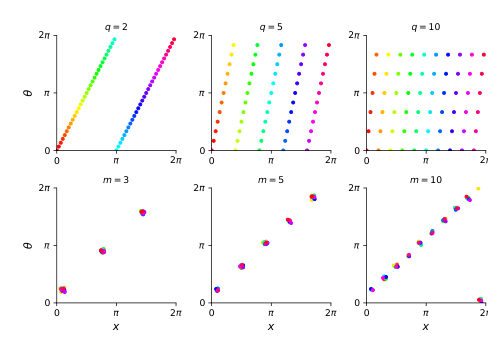
<figcaption class="paper-figure-caption"><b>Fig 1.</b> Figure 1. The two hidden families (N = 60). Top: q-twists for q = 2, 5, 10 – the swarmalators lie on q winding bands of the (x, θ) torus. Bottom: diagonal m-clusters for m = 3, 5, 10 – m correlated dots on the diagonal. All shown are linearly (Lyapunov) stable – twists for K &lt; 0, clusters for J′ + K′ &gt; 0, J′K′ &lt; 0 – with no upper bound on q or m, in contrast to the Kuramoto ring. The degenerate small cluster numbers m = 2 (synchrony) and m = 4 are treated in Appendix A.</figcaption>
</figure>
<figure class="paper-figure-card">
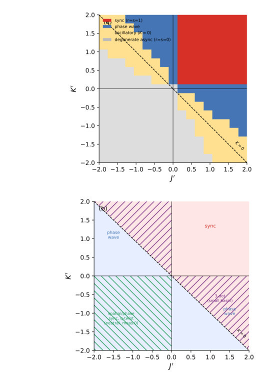
<figcaption class="paper-figure-caption"><b>Fig 2.</b> Figure 2. (a) Generic outcome from random initial conditions over (J′, K′) (N = 16): sync, phase wave, the Hamiltonian line K = 0 (dashed; K′ = −J′, apparent width is grid res- olution), and the degenerate asynchronous manifold M for K &lt; 0. (b) Analytic stability regions of the structured states (Table I), organized by sgn K.</figcaption>
</figure>
<figure class="paper-figure-card">
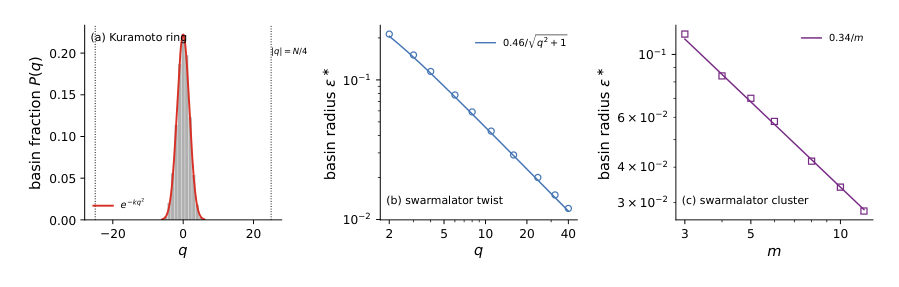
<figcaption class="paper-figure-caption"><b>Fig 3.</b> Figure 3. Local survival radius versus winding or cluster number – the mean-field opposite of the ring. (a) On a nearest- neighbour Kuramoto ring, twisted states have finite, Gaussian global basins P(q) ∼e−kq2 and exist only for |q| &lt; N/4 (dotted). (b,c) In the mean-field swarmalator the twists and clusters are neutral – their global basin under random initial conditions is of measure zero (numerically &lt; 10−6), but the local survival radius under Gaussian kicks is algebraic, ε∗ q = 0.46/ p</figcaption>
</figure>
<figure class="paper-figure-card">
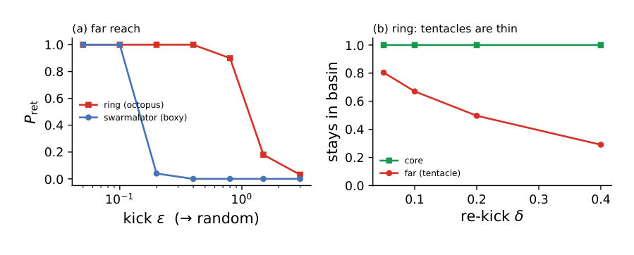
<figcaption class="paper-figure-caption"><b>Fig 4.</b> Figure 4. (a) Return probability from a kick of per-coordinate amplitude ε, out to the random-initial-condition scale: the ring twist retains a finite far reach (tentacles), the swarmalator m-cluster ends at its core (boxy); the q-twist behaves identically. (b) The ring’s far-returning points are fragile under a re-kick (thin tentacles), its core robust.</figcaption>
</figure>
</div>

<p><strong>Summary.</strong> This paper reveals that the 1D swarmalator model hosts numerous stable, 'hidden' equilibrium states beyond the well-known macroscopic phases. The authors prove these states are locally robust, characterized by an algebraic decay in their stability core radius. This work provides a detailed mathematical contrast to other coupled oscillator models, showing that the hidden states possess compact local basins rather than large, complex global basins.</p>
<p><strong>Why it may be interesting.</strong> The study provides a detailed mathematical characterization of pattern formation and stability in coupled nonlinear oscillators, offering insights into how local stability can persist even when global attractors are dominant, which is relevant for understanding complex collective behavior in many-body quantum systems.</p>
<details>
<summary>Detailed structure</summary>
<p><strong>Main problem.</strong> To demonstrate that the 1D swarmalator model possesses a rich set of stable, 'hidden' equilibria beyond the three commonly recognized macroscopic states (synchrony, phase wave, and asynchrony).</p>
<p><strong>Main result.</strong> These hidden states, including q-twisted and m-clustered families, are locally robust with survival radii decaying algebraically (1/q or 1/m), contrasting sharply with the global basin structures found in related models like the Kuramoto ring.</p>
<p><strong>Method.</strong> The analysis combines linear stability analysis using the Jacobian matrix, closed-form eigenvalue calculations, and local robustness measurements via Gaussian perturbations (kicks).</p>
<p><strong>Model / system.</strong> The one-dimensional swarmalator model, which describes coupled oscillators with bidirectional spatial and internal phase coupling. The dynamics are analyzed by viewing the flow as a gradient descent on a potential U.</p>
<p><strong>Key observables.</strong> Local survival radius ($\epsilon^*$), far-return probability ($P_{ret}(\epsilon)$), and the stability eigenvalues derived from the Jacobian matrix.</p>
<p><strong>Important parameters / regimes.</strong> Coupling strengths ($J', K'$), the winding number ($q$), and the cluster size ($m$).</p>
<p><strong>Assumptions / limitations.</strong> The analysis focuses on fixed points away from degenerate coupling axes and assumes the local robustness can be characterized by the algebraic decay of the core radius.</p>
<p><strong>Figures summary.</strong> Figures compare the local survival radius scaling between the swarmalator (algebraic decay) and the Kuramoto ring (Gaussian basins), and compare the far-return probability, showing the swarmalator's basin ends at a compact core.</p>
<p><strong>Paper structure.</strong> The paper establishes the model's Hamiltonian structure, performs linear stability analysis on structured equilibria (q-twists, m-clusters), and then rigorously compares the local stability core size against the global basin geometry, contrasting it with known results for nearest-neighbor systems.</p>
</details>
<details>
<summary>Abstract</summary>
<p>The one-dimensional swarmalator model is usually understood through three macroscopic states: synchrony, the phase wave, and asynchrony. We show that the identical model also contains a much larger set of hidden stable equilibria - families of q-twisted and m-clustered states - which random initial conditions almost never reach, because many are embedded in a degenerate neutral manifold of vanishing global basin. They are nonetheless locally robust: under Gaussian perturbations of per-coordinate amplitude ε their survival radii shrink only algebraically, as 1/q and 1/m, in sharp contrast to the Gaussian basins and winding ceiling of twisted states on a nearest-neighbour Kuramoto ring, both removed by mean-field coupling. A block-circulant Jacobian fixes the stability in closed form, and far-kick experiments indicate the basins are compact cores rather than tentacled sets. Several patterns reported in extended swarmalator models thus already exist, stable or neutrally stable, in the minimal one.</p>
</details>
<p><sub><a href="#top">↑ back to top</a></sub></p>

<p><a id="paper-2609.35624"></a></p>
<h3 id="electrothermal-behavior-of-superconducting-nanowires-buried-in-a-commercial-cmos-process"><a href="http://arxiv.org/abs/2609.35624v1">Electrothermal behavior of superconducting nanowires buried in a commercial CMOS process</a></h3>
<p><strong>Authors:</strong> Mohamed Gharib, Leonid Popryho, Salma Abdelzaher, Tejas Guruswamy, Tomas Polakovic, Umeshkumar Patel, Orlando Quaranta, Thomas Cecil, Clarence Chang, Yu-Sheng Chen, Thomas H. Swift, Grayson M. Noah, Alberto Gomez-Saiz, John J. L. Morton, M. Fernando Gonzalez-Zalba, Antonino Miceli, Inna Partin-Vaisband<br>
<strong>Type:</strong> experiment · <strong>Category:</strong> statistical mechanics · <strong>PDF:</strong> <a href="https://arxiv.org/pdf/2609.35624v1">https://arxiv.org/pdf/2609.35624v1</a><br>
<strong>Analysis basis:</strong> full PDF text, analyzed in chunks
<strong>Topic relevance:</strong> <code>QC/QI experiment</code> <strong>2/5</strong> · <code>driven-dissipative phase transition</code> <strong>2/5</strong> · <code>non-equilibrium universality</code> <strong>2/5</strong> · <code>Keldysh / 2PI / non-Gaussian methods</code> <strong>1/5</strong> · <code>correlated / nonlocal dissipation</code> <strong>1/5</strong> · <code>methods for driven-dissipative</code> <strong>1/5</strong></p>
<div class="figure-strip-hint">↔ Scroll figures horizontally</div>
<div class="paper-figures-scroll">
<figure class="paper-figure-card">
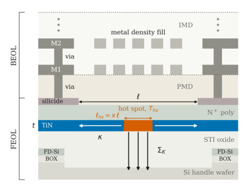
<figcaption class="paper-figure-caption"><b>Fig 1.</b> FIG. 1. Cross-section along the wire, not to scale. The TiN film lies on the shallow-trench-isolation (STI) oxide, is capped by doped polysilicon with silicide over the two con- tact ends, and is buried under the pre-metal dielectric (PMD), the BEOL metal levels (M1, M2), and inter-metal dielectric (IMD); isolated M1/M2 blocks are floating density fill, and dots mark where the stack continues. A hot spot at Ths loses heat along the film to the contacts (set by κ) and vertically into the surrounding layers (set by ΣK). ℓis the length be- tween the silicide pads; W runs into the page.</figcaption>
</figure>
<figure class="paper-figure-card">
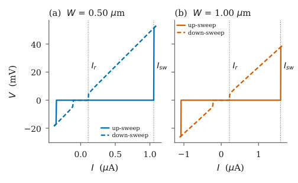
<figcaption class="paper-figure-caption"><b>Fig 2.</b> FIG. 2. Hysteretic current–voltage characteristics of TiN nanowires, ℓ= 50 µm, at Tb = 0.15 K. (a) W = 0.5 µm: the up-sweep switches at Isw = 1.055 µA and the down-sweep retraps at Ir = 0.109 µA. (b) W = 1.0 µm: Isw = 1.590 µA, Ir = 0.219 µA. Vertical dotted lines mark the extracted cur- rents. Each Isw above is that of the single trace shown; be- cause individual sweeps scatter downward through premature switching, the text instead quotes the maximum over the Tb ≤0.6 K plateau. Thresholds are taken on the positive branch; Ir agrees between polarities to within 4 %.</figcaption>
</figure>
<figure class="paper-figure-card">
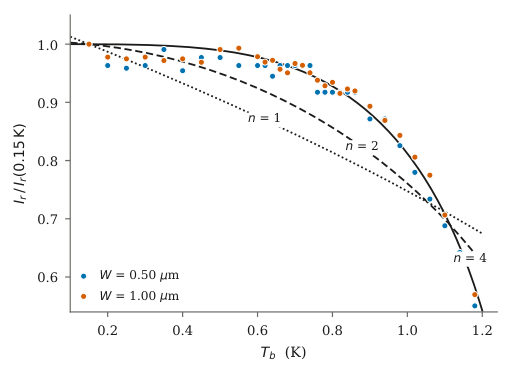
<figcaption class="paper-figure-caption"><b>Fig 3.</b> FIG. 3. Ir normalized to its 0.15 K value against Tb, for both ℓ= 50 µm devices, with Ir = C (T n hs −T n b )1/2 fitted in the prefactor C and the hot-spot temperature Ths and normal- ized at the same point, for n = 1 (constant-κ longitudinal- conduction limit), 2, and 4 (conventional interfacial phonon- radiation model). Among the fixed exponents shown, n = 4 best follows the data over the full range.</figcaption>
</figure>
<figure class="paper-figure-card">
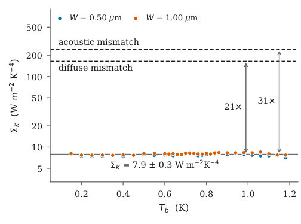
<figcaption class="paper-figure-caption"><b>Fig 4.</b> FIG. 4. Effective cooling (Kapitza) coefficient ΣK extracted point by point from Eq. (2) for both ℓ= 50 µm devices. The 62 extractions below Tc give one temperature-independent value, 7.9(3) W/(m2 K4) (solid line), 31(21)× below the tab- ulated acoustic- (diffuse-) mismatch value for a single clean TiN/SiO2 interface (dashed lines).18</figcaption>
</figure>
<figure class="paper-figure-card">
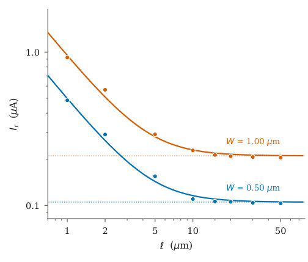
<figcaption class="paper-figure-caption"><b>Fig 5.</b> FIG. 5. Length dependence of Ir across the TiN test struc- tures of Ref. 24, measured at Tb = 0.15 K. Markers are mea- sured data. Solid curves are Eq. (4) with amplitude and ℓ∗</figcaption>
</figure>
</div>

<p><strong>Summary.</strong> This work characterizes the electrothermal response of superconducting nanowires embedded within a commercial CMOS chip. By measuring the retrapping current, the authors quantify the heat dissipation mechanisms, finding that the surrounding silicon stack severely limits heat removal compared to ideal interfaces. The results establish a two-channel model governing the current's dependence on wire length.</p>
<p><strong>Why it may be interesting.</strong> While focused on solid-state electronics, the detailed thermal modeling, phase transition analysis (superconducting transition), and non-equilibrium heat transfer mechanisms (phonon cooling) are highly relevant to understanding energy dissipation in nanoscale quantum devices.</p>
<details>
<summary>Detailed structure</summary>
<p><strong>Main problem.</strong> The paper investigates the electrothermal behavior of superconducting nanowires integrated into a commercial CMOS process, specifically determining how heat is dissipated to sustain a resistive hot spot.</p>
<p><strong>Main result.</strong> The measured effective cooling coefficient ($\Sigma_K$) is significantly lower than ideal theoretical benchmarks, indicating that the buried CMOS environment severely limits heat removal. The retrapping current ($I_r$) is governed by a two-channel model balancing longitudinal conduction and interfacial phonon cooling.</p>
<p><strong>Method.</strong> The study uses four-point I–V measurements across varying temperatures and geometries to compare measured retrapping currents ($I_r$) against theoretical thermal models.</p>
<p><strong>Model / system.</strong> The system is a TiN superconducting nanowire buried in the front-end-of-line of a 22 nm FD-SOI CMOS process. Heat loss is modeled via longitudinal conduction to contacts and interfacial phonon cooling into the surrounding silicon/metal stack.</p>
<p><strong>Key observables.</strong> Retrapping current ($I_r$), switching-to-retrapping current ratio ($I_{sw}/I_r$), and the effective cooling coefficient ($\Sigma_K$).</p>
<p><strong>Important parameters / regimes.</strong> Bath temperatures ($T_b$) ranging from 0.15 K to 1.19 K; wire widths ($W$) of 0.5 and 1.0 $\mu$m; crossover length ($\ell^*$) of $\approx 3.5 \mu$m.</p>
<p><strong>Assumptions / limitations.</strong> The analysis relies on fitting the temperature dependence of $I_r$ to an interfacial phonon radiation model ($n=4$) and employing a two-channel model to describe length dependence.</p>
<p><strong>Figures summary.</strong> Figures illustrate the hysteretic I-V curves, confirm the $T_b$ dependence of $I_r$ follows an $n=4$ law, and show the constant value of the extracted $\Sigma_K$ across different measurement points.</p>
<p><strong>Paper structure.</strong> The paper proceeds by characterizing the hysteretic I-V curves, fitting the temperature dependence of the retrapping current to determine the cooling mechanism, and finally analyzing the length dependence of $I_r$ using a two-channel model to extract the effective cooling coefficient $\Sigma_K$.</p>
</details>
<details>
<summary>Abstract</summary>
<p>Superconducting films native to a commercial CMOS process enable co-integration of superconducting devices (high-kinetic-inductance elements and nanowire detectors) with cryogenic CMOS on one monolithic die. Such films are buried in the front-end-of-line, beneath the back-end-of-line metal stack, an environment that might quench a self-heated hot spot. Current-voltage characteristics are reported for titanium nitride (TiN) nanowires in the polycrystalline-silicon resistor layer of a 22 nm FD-SOI process, and measured retrapping currents are compared with thermal models for longitudinal conduction to the contacts and interfacial phonon cooling into the stack. The wires are strongly hysteretic, with switching-to-retrapping current ratios I_sw/I_r of 7.4-9.8, sustaining a normal hot spot. For two wires of length ell = 50 micrometers and widths W = 0.50 and 1.00 micrometers, over bath temperatures T_b = 0.15-1.19 K, I_r follows the interfacial form (T_hs^n - T_b^n)^(1/2) with n = 4 (T_hs, the effective hot-spot temperature), and is strongly inconsistent with the (T_hs - T_b)^(1/2) constant-kappa longitudinal-conduction limit; free-exponent fits give n = approximately 4.8-5.0. An effective cooling coefficient Sigma_K = 7.9(3) W/(m^2 K^4) describes the data: 31(21) times below the acoustic- (diffuse-) mismatch value for a single clean interface, and approximately 12 times below the lowest previously reported comparable nanowire coefficient. The model-based film thermal conductivity is kappa = approximately 20 mW/(m K). Across lengths ell = 1-50 micrometers, I_r matches neither ell^(-1) of pure longitudinal conduction nor ell^0 of pure interfacial cooling; a two-channel model reproduces I_r(ell) with crossover length ell* = approximately 3.5 micrometers predicted, to an O(1) prefactor, from Sigma_K and kappa.</p>
</details>
<p><sub><a href="#top">↑ back to top</a></sub></p>

<p><a id="paper-2609.34885"></a></p>
<h3 id="directional-pumping-of-a-two-level-system-by-a-fluctuation-regulated-quantum-source"><a href="http://arxiv.org/abs/2609.34885v1">Directional pumping of a two-level system by a fluctuation-regulated quantum source</a></h3>
<p><strong>Authors:</strong> Sarfraj Fency, Rangeet Bhattacharyya<br>
<strong>Type:</strong> theory · <strong>Category:</strong> other · <strong>PDF:</strong> <a href="https://arxiv.org/pdf/2609.34885v1">https://arxiv.org/pdf/2609.34885v1</a><br>
<strong>Analysis basis:</strong> full PDF text, analyzed in chunks
<strong>Topic relevance:</strong> <code>methods for driven-dissipative</code> <strong>2/5</strong> · <code>Keldysh / 2PI / non-Gaussian methods</code> <strong>1/5</strong> · <code>correlated / nonlocal dissipation</code> <strong>1/5</strong> · <code>driven-dissipative phase transition</code> <strong>1/5</strong> · <code>non-equilibrium universality</code> <strong>1/5</strong> · <code>quantum measurements</code> <strong>1/5</strong></p>
<div class="figure-strip-hint">↔ Scroll figures horizontally</div>
<div class="paper-figures-scroll">
<figure class="paper-figure-card">
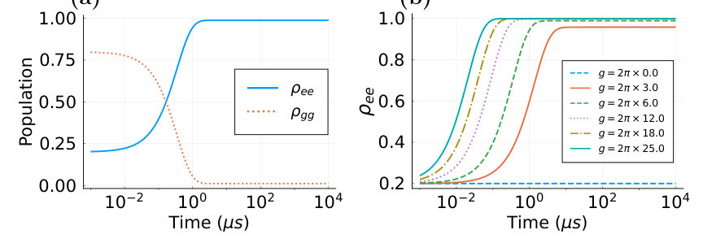
<figcaption class="paper-figure-caption"><b>Fig 1.</b> FIG. 1. Directional population transfer for a fully excited source. (a) The excited-state population</figcaption>
</figure>
<figure class="paper-figure-card">
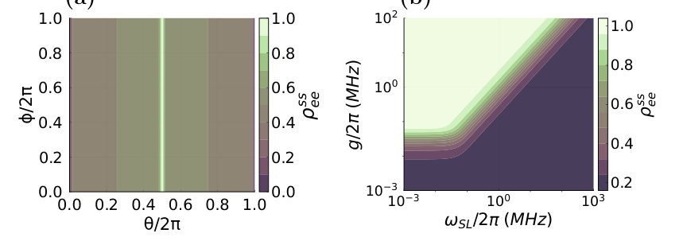
<figcaption class="paper-figure-caption"><b>Fig 2.</b> FIG. 2. Steady-state population and dynamical regimes. (a) ρss ee as a function of the two angles</figcaption>
</figure>
<figure class="paper-figure-card">
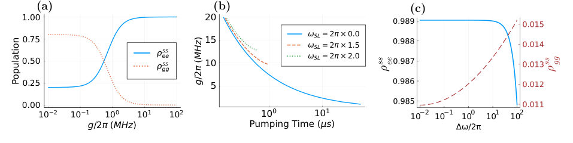
<figcaption class="paper-figure-caption"><b>Fig 3.</b> FIG. 3. Coupling, pumping time, and detuning dependence. (a) Steady-state populations ver-</figcaption>
</figure>
<figure class="paper-figure-card">
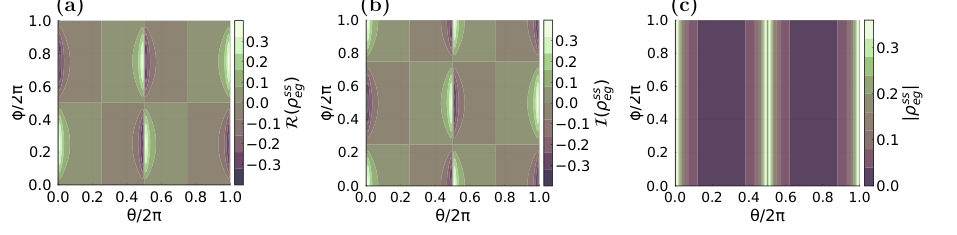
<figcaption class="paper-figure-caption"><b>Fig 4.</b> FIG. 4. Steady-state target coherence as a function of the pure-source-state angles. Panels (a) and</figcaption>
</figure>
<figure class="paper-figure-card">

<figcaption class="paper-figure-caption"><b>Fig 5.</b> Figure 3(c) shows the detuning dependence of the fluctuation-regulated pumping pro-</figcaption>
</figure>
</div>

<p><strong>Summary.</strong> This paper demonstrates that directional population pumping in a two-level system can be achieved by coupling it to a quantum source, rather than a classical field. By treating the source quantum mechanically and using the Fluctuation-Regulated Quantum Master Equation, the authors show that the source's fluctuations generate an asymmetric dissipative channel. This mechanism allows the system to exceed the standard optical-Bloch saturation limit.</p>
<p><strong>Why it may be interesting.</strong> This work provides a detailed theoretical framework for engineering non-equilibrium quantum processes, specifically demonstrating how quantum noise (fluctuations) can be harnessed to violate classical saturation limits in quantum optics.</p>
<details>
<summary>Detailed structure</summary>
<p><strong>Main problem.</strong> The paper addresses how to achieve directional population transfer (pumping) in a two-level system (TLS) when driven by a quantum source, overcoming the saturation limit imposed by classical driving fields.</p>
<p><strong>Main result.</strong> Directional pumping emerges from the second moments of the quantum source, leading to a drive-induced dissipative contribution in the master equation that can push the steady-state population above the classical optical-Bloch limit.</p>
<p><strong>Method.</strong> The dynamics are analyzed using the Fluctuation-Regulated Quantum Master Equation (FRQME) framework, treating the source as a quantum subsystem that is subsequently traced out.</p>
<p><strong>Model / system.</strong> The system consists of a target TLS coupled to a quantum source, modeled as a single-excitation degree of freedom. The interaction is an exchange coupling, and the dynamics are governed by the FRQME.</p>
<p><strong>Key observables.</strong> Steady-state excited-state population ($
ho_{ss}^{ee}$), pumping rate ($\kappa$), and target coherence ($
ho_{ss}^{eg}$).</p>
<p><strong>Important parameters / regimes.</strong> Source correlation time ($  au_c$), detuning ($\Delta\omega$), and coupling strength ($g$).</p>
<p><strong>Assumptions / limitations.</strong> The analysis relies on the FRQME and approximations such as retaining the secular second-order contribution; the source is treated as a stream of single-excitation ancillas.</p>
<p><strong>Figures summary.</strong> Figures illustrate the dependence of $
ho_{ss}^{ee}$ on source angles ($   heta, \phi$) and coupling strengths, and show the characteristic Lorentzian detuning dependence of the pumping rate.</p>
<p><strong>Paper structure.</strong> The paper develops the theory by first establishing the limitations of classical driving, then deriving the effective dynamics using the FRQME based on source moments, and finally analyzing the resulting pumping rates and steady-state populations under various parameter regimes.</p>
</details>
<details>
<summary>Abstract</summary>
<p>A resonant classical field drives a two-level system coherently and, with ordinary relaxation, produces saturation rather than directional population transfer. Here we show that directionality emerges when the excitation source is retained as a quantum subsystem and subsequently traced out. We model the source as a single-excitation degree of freedom, or equivalently a stream of two-level ancillas, exchange-coupled to a target two-level system. The source first moment generates the usual coherent drive, while its second moments produce upward and downward dissipative channels. For a number-diagonal, fully excited source, the first moment vanishes and only the upward channel remains, yielding monotonic pumping of the target. The same structure follows from both an exact collision map and a fluctuation-regulated second-order quantum master equation. For exponentially decaying source correlations, the pumping rate shows a Lorentzian detuning dependence governed by the correlation time $τ_c$, accompanied by a dispersive frequency shift. In the presence of thermal relaxation, the steady-state excited-state population can exceed the resonantly driven optical-Bloch limit of one half. Within the fluctuation-regulated master equation, this directional pumping arises as a drive-induced dissipative contribution whose strength and spectral response are controlled by $τ_c$.</p>
</details>
<p><sub><a href="#top">↑ back to top</a></sub></p>

<p><a id="paper-2609.34468"></a></p>
<h3 id="fluctuations-and-multifractality-in-stochastic-models-of-interface-growth-and-population-dynamics"><a href="http://arxiv.org/abs/2609.34468v1">Fluctuations and multifractality in stochastic models of interface growth and population dynamics</a></h3>
<p><strong>Authors:</strong> Maximilien Bernard<br>
<strong>Type:</strong> theory · <strong>Category:</strong> disordered systems and neural networks · <strong>PDF:</strong> <a href="https://arxiv.org/pdf/2609.34468v1">https://arxiv.org/pdf/2609.34468v1</a><br>
<strong>Analysis basis:</strong> full PDF text, analyzed in chunks
<strong>Topic relevance:</strong> <code>non-equilibrium universality</code> <strong>2/5</strong> · <code>Frenkel-Kontorova</code> <strong>1/5</strong> · <code>Keldysh / 2PI / non-Gaussian methods</code> <strong>1/5</strong> · <code>analog quantum simulation</code> <strong>1/5</strong> · <code>driven-dissipative phase transition</code> <strong>1/5</strong> · <code>methods for driven-dissipative</code> <strong>1/5</strong></p>
<div class="figure-strip-hint">↔ Scroll figures horizontally</div>
<div class="paper-figures-scroll">
<figure class="paper-figure-card">
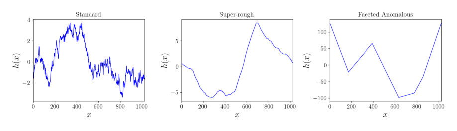
<figcaption class="paper-figure-caption"><b>Fig 1.</b> Figure 1.1: Profiles of stationary interfaces: an Edwards-Wilkinson interface (standard scaling), a molecular-beam-epitaxy super-rough interface, and an anomalous faceted interface.</figcaption>
</figure>
<figure class="paper-figure-card">
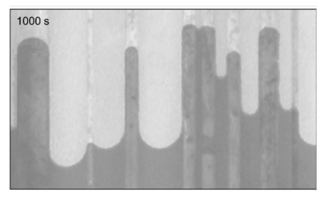
<figcaption class="paper-figure-caption"><b>Fig 2.</b> Figure 1.2: Experimental interface profiles displaying anomalous roughening in a Hele- Shaw cell with quenched disorder. Taken from [36]</figcaption>
</figure>
<figure class="paper-figure-card">
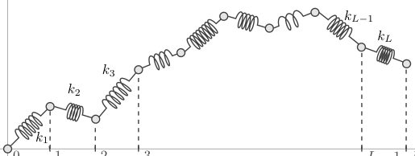
<figcaption class="paper-figure-caption"><b>Fig 3.</b> Figure 2.1: Illustration of a random spring chain with one end fixed and the other end free. This will be referred to as the free case.</figcaption>
</figure>
<figure class="paper-figure-card">
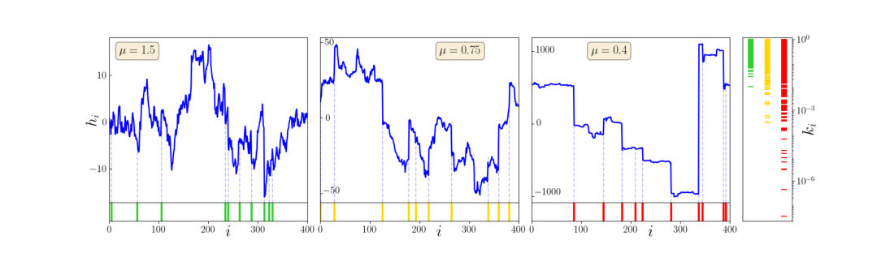
<figcaption class="paper-figure-caption"><b>Fig 4.</b> Figure 2.2: Examples of stationary interfaces for µ = 1.5, 0.75, and 0.4, with Dirichlet boundary conditions and zero mean. The ten weakest springs are indicated below each interface. As µ decreases, weak springs become more frequent and the interfaces develop larger jumps. These large jumps are the origin of the anomalous disorder-averaged behavior.</figcaption>
</figure>
<figure class="paper-figure-card">
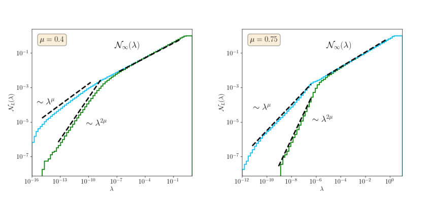
<figcaption class="paper-figure-caption"><b>Fig 5.</b> Figure 2.3: Cumulative spectral density NL(λ) for µ = 0.4 and µ = 0.75, with L = 500 and Ns = 108 realizations, for free (blue) and fixed (green) boundary conditions. The dashed black curves are the analytical predictions obtained from the small-λ asymptotics and the infinite-volume density ρ(λ). The low-λ tail is controlled by the weakest spring in the free case and by the second-weakest spring in the fixed case.</figcaption>
</figure>
</div>

<p><strong>Summary.</strong> This thesis analyzes the impact of disorder and fluctuations on large-scale physical processes across three domains: interface growth, Anderson localization, and multiplicative growth. It rigorously distinguishes the origins of anomalous scaling in interfaces and develops advanced mathematical tools to study strongly disordered systems. The work provides a unified theoretical framework for understanding how disorder dictates macroscopic behavior in diverse physical models.</p>
<p><strong>Why it may be interesting.</strong> The study of anomalous scaling and localization in disordered systems provides foundational theoretical tools applicable to understanding complex dynamics in many-body physics, including those relevant to quantum disordered systems.</p>
<details>
<summary>Detailed structure</summary>
<p><strong>Main problem.</strong> The paper investigates how disorder and fluctuations shape large-scale growth phenomena across three related physical settings: fluctuating interfaces, random spring chains, and random multiplicative growth.</p>
<p><strong>Main result.</strong> It distinguishes between cases where anomalous scaling in interfaces is a purely statistical artifact versus when it is a genuine physical effect, and it develops methods to analyze strongly disordered systems.</p>
<p><strong>Method.</strong> The study employs theoretical physics methods, including scaling analysis, renormalization group concepts, and a new combinatorial approach for strongly disordered regimes.</p>
<p><strong>Model / system.</strong> The models include fluctuating interfaces (like the stochastic porous medium equation), random spring chains exhibiting Anderson localization, and multiplicative growth models simulating wealth or population dynamics.</p>
<p><strong>Key observables.</strong> Roughness exponent, scaling exponents (local vs. global), spectral properties (localization length), and phase diagrams.</p>
<p><strong>Important parameters / regimes.</strong> Disorder strength, system size (L), time (t), and the competition between growth rates and redistribution mechanisms.</p>
<p><strong>Assumptions / limitations.</strong> The analysis often relies on comparing typical behavior versus average behavior when dealing with quenched disorder.</p>
<p><strong>Paper structure.</strong> The thesis is structured into parts covering interface growth, Anderson localization in random chains, and random multiplicative growth, showing the conceptual links between these three regimes.</p>
</details>
<details>
<summary>Abstract</summary>
<p>This thesis studies how disorder and fluctuations shape large-scale growth phenomena in three related settings: fluctuating interfaces, random spring chains, and random multiplicative growth. The first part concerns interface growth and a phenomenon denoted anomalous scaling, where local and global exponents differ.To clarify its origin, we study two models in which this mismatch has different causes. The first is a heterogeneous elastic line, where we show that the apparent anomaly is a purely statistical effect. The second is the stochastic porous medium equation, a strongly nonlinear model in which the anomaly is genuine. The second part concerns Anderson localization, which appears here through the spectral properties of the heterogeneous elastic lines. We study chains with both random masses and random spring constants, with particular emphasis on the strong-disorder regime, where standard weak-disorder expansions break down. We develop a new combinatorial method to probe this regime. The last part concerns random multiplicative growth with redistribution. In such models, changes in wealth, population, or mass, for instance, are proportional to the amount already present, so that small differences are amplified over time. This naturally generates broad distributions and provides a simple mechanism for the emergence of inequality and concentration, with applications to population dynamics, wealth distribution, city growth, and ecology. We in particular study models in which each site has its own quenched growth rate, representing a persistent advantage or disadvantage, and is also subject to transient fluctuations. Redistribution competes with these mechanisms by homogenizing the system. This competition leads to rich phase diagrams.</p>
</details>
<p><sub><a href="#top">↑ back to top</a></sub></p>

<p><a id="paper-2609.34213"></a></p>
<h3 id="monotonicity-of-the-renyi-channel-capacity-under-non-signaling-assisted-channel-simulation"><a href="http://arxiv.org/abs/2609.34213v1">Monotonicity of the Rényi channel capacity under non-signaling assisted channel simulation</a></h3>
<p><strong>Authors:</strong> Tina Shariat, Matt Hoogsteder-Riera, Marco Tomamichel<br>
<strong>Type:</strong> theory · <strong>Category:</strong> other · <strong>PDF:</strong> <a href="https://arxiv.org/pdf/2609.34213v1">https://arxiv.org/pdf/2609.34213v1</a><br>
<strong>Analysis basis:</strong> full PDF text, analyzed in chunks
<strong>Topic relevance:</strong> <code>Keldysh / 2PI / non-Gaussian methods</code> <strong>2/5</strong> · <code>methods for driven-dissipative</code> <strong>2/5</strong> · <code>analog quantum simulation</code> <strong>1/5</strong> · <code>quantum measurements</code> <strong>1/5</strong></p>
<div class="figure-strip-hint">↔ Scroll figures horizontally</div>
<div class="paper-figures-scroll">
<figure class="paper-figure-card">
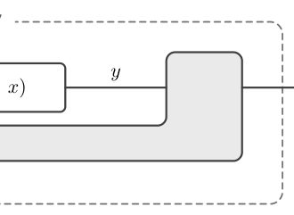
<figcaption class="paper-figure-caption"><b>Fig 1.</b> Figure 1: Non-signaling simulation of W ′ from W (Definition 1).</figcaption>
</figure>
</div>

<p><strong>Summary.</strong> This theoretical paper proves that non-signaling correlations cannot enhance the Rényi capacity of a classical channel at any order $\alpha$. By using a variational method based on the Legendre transform, the authors show that the capacity remains bounded by the original channel's capacity, establishing a fundamental limit on information processing assisted by non-causal correlations.</p>
<p><strong>Why it may be interesting.</strong> While focused on classical information theory, the techniques involving capacity bounds, information geometry, and the comparison between physical constraints (causality) and idealized correlations (non-signaling) are highly relevant to understanding resource theories in quantum information.</p>
<details>
<summary>Detailed structure</summary>
<p><strong>Main problem.</strong> The paper investigates whether non-signaling correlations shared between sender and receiver can increase the Rényi capacity of a classical communication channel.</p>
<p><strong>Main result.</strong> The authors prove that no non-signaling box can raise the Rényi capacity at any order $\alpha$, meaning non-signaling simulation cannot improve the channel's capacity bounds.</p>
<p><strong>Method.</strong> They employ a variational approach based on the Legendre transform to linearize the channel dependence, allowing the analysis of the capacity as an extremum over affine functionals.</p>
<p><strong>Model / system.</strong> The model involves classical communication channels and the concept of a 'non-signaling box,' which represents correlations beyond those allowed by causality. The analysis covers the Rényi capacity $R_\alpha$ for all orders $\alpha \in [0, \infty]$.</p>
<p><strong>Key observables.</strong> Rényi capacity ($R_\alpha$), random-coding exponent, and strong-converse exponent.</p>
<p><strong>Important parameters / regimes.</strong> The order $\alpha$ of the Rényi capacity, and the non-signaling constraints defining the simulation box.</p>
<p><strong>Assumptions / limitations.</strong> The analysis relies on the mathematical structure of the non-signaling box being linear while the capacity functional is nonlinear, which is resolved by the Legendre transform.</p>
<p><strong>Paper structure.</strong> The paper systematically proves the monotonicity of $R_\alpha$ across different regimes of $\alpha$, starting with the Shannon capacity ($\alpha=1$) and extending to the limiting cases $\alpha=0$ and $\alpha=\infty$.</p>
</details>
<details>
<summary>Abstract</summary>
<p>We ask whether non-signaling correlations shared between the sender and receiver can increase the Rényi capacity of a classical channel. Non-signaling boxes form a strictly larger class than that of encoder and decoder pairs assisted by shared randomness, so the usual argument based on independent preprocessing and postprocessing is insufficient, and the constraints defining such boxes are linear in the box, while the Rényi capacity depends on the channel nonlinearly. We resolve this mismatch with a variational approach based on the Legendre transform, which recasts the capacity as an extremum over a family of affine functionals in which the channel appears linearly. Combining this method with separate arguments for the Shannon capacity and endpoint orders, we prove that no non-signaling box can raise the Rényi capacity at any order, from order zero through the Shannon capacity to the limiting order at infinity. Consequently, non-signaling simulation cannot increase the random-coding or sphere-packing exponent below capacity, or decrease the strong-converse exponent above capacity.</p>
</details>
<p><sub><a href="#top">↑ back to top</a></sub></p>

<p><a id="paper-2609.34699"></a></p>
<h3 id="log-euclidean-renyi-conditional-mutual-information"><a href="http://arxiv.org/abs/2609.34699v1">Log-Euclidean Rényi Conditional Mutual Information</a></h3>
<p><strong>Authors:</strong> Roberto Rubboli, Amir Arqand, Mark M. Wilde<br>
<strong>Type:</strong> theory · <strong>Category:</strong> quantum information and computing · <strong>PDF:</strong> <a href="https://arxiv.org/pdf/2609.34699v1">https://arxiv.org/pdf/2609.34699v1</a><br>
<strong>Analysis basis:</strong> full PDF text, analyzed in chunks
<strong>Topic relevance:</strong> <code>Keldysh / 2PI / non-Gaussian methods</code> <strong>2/5</strong> · <code>methods for driven-dissipative</code> <strong>2/5</strong> · <code>analog quantum simulation</code> <strong>1/5</strong></p>
<div class="figure-strip-hint">↔ Scroll figures horizontally</div>
<div class="paper-figures-scroll">
<figure class="paper-figure-card">
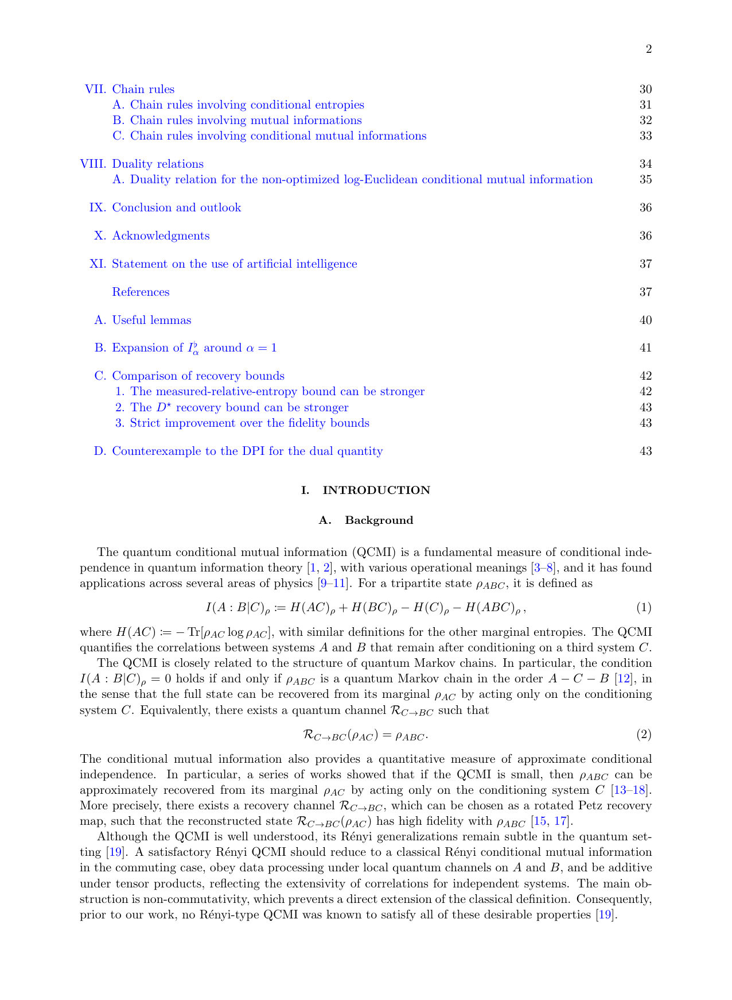
<figcaption class="paper-figure-caption"><b>Fig 1.</b> Low-resolution page preview, page 2</figcaption>
</figure>
<figure class="paper-figure-card">
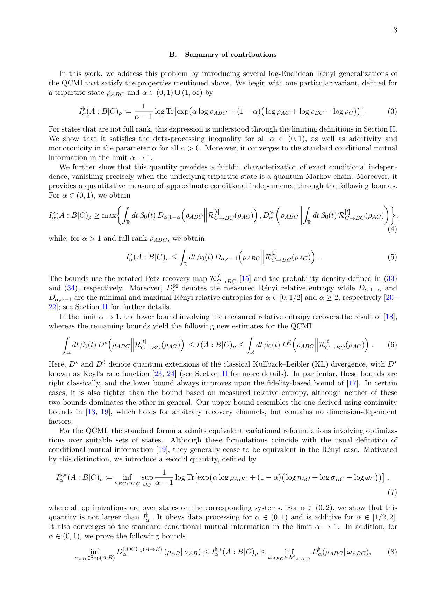
<figcaption class="paper-figure-caption"><b>Fig 2.</b> Low-resolution page preview, page 3</figcaption>
</figure>
<figure class="paper-figure-card">
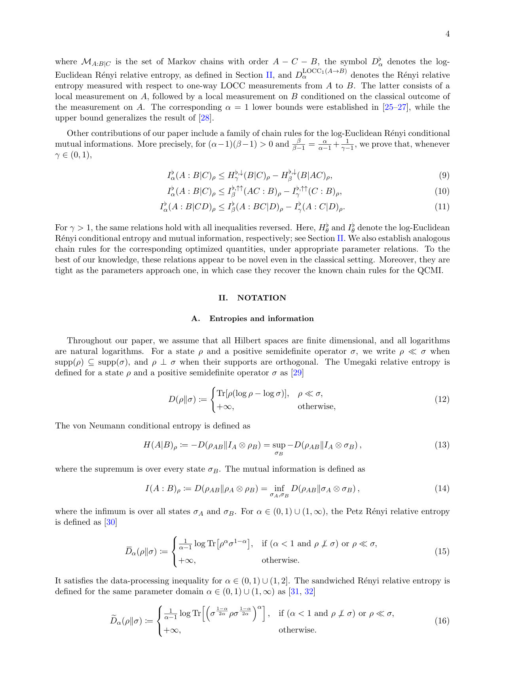
<figcaption class="paper-figure-caption"><b>Fig 3.</b> Low-resolution page preview, page 4</figcaption>
</figure>
<figure class="paper-figure-card">
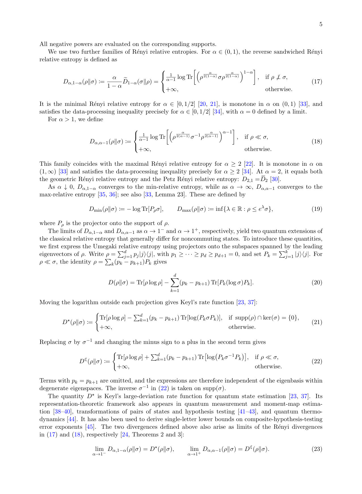
<figcaption class="paper-figure-caption"><b>Fig 4.</b> Low-resolution page preview, page 5</figcaption>
</figure>
<figure class="paper-figure-card">
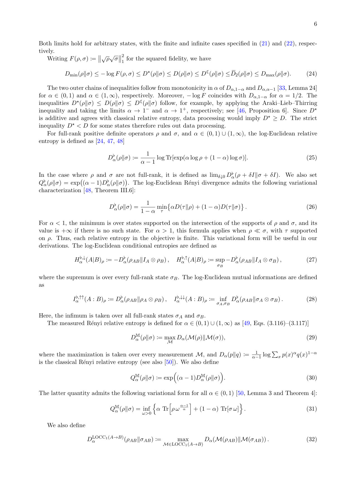
<figcaption class="paper-figure-caption"><b>Fig 5.</b> Low-resolution page preview, page 6</figcaption>
</figure>
</div>

<p><strong>Summary.</strong> This paper introduces the log-Euclidean Rényi Conditional Mutual Information, a generalized measure designed to overcome theoretical hurdles in extending classical concepts to quantum settings. It proves that this new quantity maintains desirable properties like additivity and monotonicity, and it derives improved bounds for the standard QCMI. This advances the theoretical toolkit for quantifying conditional independence in quantum systems.</p>
<p><strong>Why it may be interesting.</strong> The development of robust, generalized measures of conditional independence is crucial for understanding entanglement structure and correlations in complex quantum many-body systems, which is a core topic in AMO physics.</p>
<details>
<summary>Detailed structure</summary>
<p><strong>Main problem.</strong> The central problem is finding a fully quantum Rényi generalization of the Conditional Mutual Information (QCMI) that retains desirable structural properties like monotonicity and additivity.</p>
<p><strong>Main result.</strong> The authors introduce the log-Euclidean Rényi Conditional Mutual Information, $I_{lat}^{\alpha}(A : B|C)
ho$, which satisfies key properties and provides improved bounds on the standard QCMI.</p>
<p><strong>Method.</strong> The work employs variational principles, log-Euclidean divergences, and Taylor expansions around the $\alpha=1$ limit to define and analyze the generalized information measures.</p>
<p><strong>Model / system.</strong> The analysis is conducted within the framework of quantum information theory, focusing on tripartite quantum states $
ho_{ABC}$ and their associated conditional independence measures.</p>
<p><strong>Key observables.</strong> Quantum Conditional Mutual Information (QCMI), Log-Euclidean Rényi Conditional Mutual Information ($I_{lat}^{\alpha}$), and various forms of quantum relative entropy (e.g., Umegaki, Petz).</p>
<p><strong>Important parameters / regimes.</strong> The Rényi parameter $\alpha$, which is varied to show convergence to the standard QCMI as $\alpha 	o 1$.</p>
<p><strong>Assumptions / limitations.</strong> The definitions for the generalized quantities often require the states to be full-rank, necessitating the use of limiting definitions for non-full-rank cases.</p>
<p><strong>Paper structure.</strong> The paper proceeds by defining the generalized quantities, proving their structural properties (monotonicity, additivity), establishing bounds on QCMI using relative entropies, and finally deriving novel chain rules.</p>
</details>
<details>
<summary>Abstract</summary>
<p>Quantum conditional mutual information (QCMI) is a fundamental measure of conditional independence, with central applications throughout quantum information theory and many-body physics. Despite its importance, finding a fully quantum Rényi generalization that satisfies all desirable structural properties has remained an open question. In this work, we introduce a quantum Rényi conditional mutual information possessing these desirable properties: it is monotone under local quantum channels, additive under tensor products, monotone in the Rényi parameter, and converges to the QCMI in the limit $α\to 1$. We establish bounds on this quantity in terms of relative entropies to the Petz-recovered state, showing that it provides a distinct measure of approximate conditional independence. As a consequence, we derive recovery-based upper and lower bounds on the QCMI in terms of quantum generalizations of the Kullback-Leibler divergence, improving upon the best known results in certain regimes. Finally, we establish bounds in terms of relative entropies to the sets of Markov and separable states and derive Rényi chain rules, which appear to be novel even in the classical setting.</p>
</details>
<p><sub><a href="#top">↑ back to top</a></sub></p>

<p><a id="paper-2609.32633"></a></p>
<h3 id="gem-an-implementation-of-the-ghost-gutzwiller-approximation-for-simulating-interacting-quantum-systems"><a href="http://arxiv.org/abs/2609.32633v1">GEM: An implementation of the ghost-Gutzwiller approximation for simulating interacting quantum systems</a></h3>
<p><strong>Authors:</strong> Samuele Giuli, Tsung-Han Lee, Yong-Xin Yao, Ina Park, Harrison LaBollita, Ivan Pasqua, Nicola Lanatà, Olivier Gingras<br>
<strong>Type:</strong> theory · <strong>Category:</strong> strongly correlated electrons · <strong>PDF:</strong> <a href="https://arxiv.org/pdf/2609.32633v1">https://arxiv.org/pdf/2609.32633v1</a><br>
<strong>Analysis basis:</strong> full PDF text, analyzed in chunks
<strong>Topic relevance:</strong> <code>Keldysh / 2PI / non-Gaussian methods</code> <strong>2/5</strong> · <code>analog quantum simulation</code> <strong>1/5</strong> · <code>methods for driven-dissipative</code> <strong>1/5</strong></p>
<div class="figure-strip-hint">↔ Scroll figures horizontally</div>
<div class="paper-figures-scroll">
<figure class="paper-figure-card">
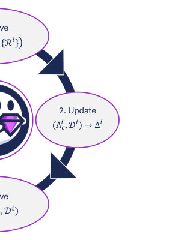
<figcaption class="paper-figure-caption"><b>Fig 1.</b> Figure 1: Schematic representation of the self-consistency cycle of the finite temper- ature ghost-GA implementation present in GEM with the logo of the software at the center.</figcaption>
</figure>
<figure class="paper-figure-card">
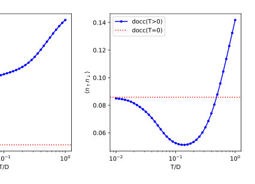
<figcaption class="paper-figure-caption"><b>Fig 2.</b> Figure 2: Temperature evolution of the total energy E (left), entropy S (center) and double occupancy (right) for the Hubbard model on the Bethe lattice with U/D = 2.0 using B = 3.</figcaption>
</figure>
<figure class="paper-figure-card">
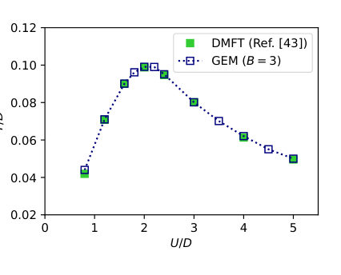
<figcaption class="paper-figure-caption"><b>Fig 3.</b> Figure 3: Antiferromagnetic order parameter (left) as a function of temperature for different values of U/D obtained with GEM using B = 3, and temperature versus interaction antiferromagnetic phase boundaries (right) for the square lattice Hubbard model compared with DMFT from Ref. [42].</figcaption>
</figure>
<figure class="paper-figure-card">
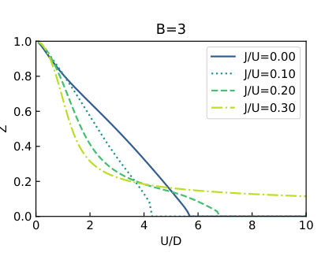
<figcaption class="paper-figure-caption"><b>Fig 4.</b> Figure 4: Quasiparticle weight Z for a three-orbital model with local Hubbard- Kanamori interaction on the Bethe lattice at filling n=2 as a function of U/D and for J/D = 0.0,0.1,0.2 and 0.3 using GEM, for B = 1 (left panel) and B = 3 (right panel).</figcaption>
</figure>
</div>

<p><strong>Summary.</strong> This paper introduces GEM, a new open-source Python package implementing the ghost-Gutzwiller approximation for simulating strongly correlated electronic systems. It provides a computationally efficient method to calculate equilibrium properties for multi-orbital lattice models. By systematically bridging the gap between simpler approximations and full DMFT, GEM offers a powerful, versatile tool for condensed matter theory.</p>
<p><strong>Why it may be interesting.</strong> While focused on condensed matter, the systematic, controlled approximation scheme (controlled by $B$) and the integration with established computational ecosystems (TRIQS) offer valuable lessons in developing scalable numerical tools for complex quantum many-body problems.</p>
<details>
<summary>Detailed structure</summary>
<p><strong>Main problem.</strong> The paper addresses the challenge of computing equilibrium properties for strongly correlated electronic systems, which are notoriously difficult to model accurately.</p>
<p><strong>Main result.</strong> The authors introduce GEM, an open-source Python package that provides a computationally efficient framework for studying multi-orbital lattice models using the ghost-Gutzwiller approximation.</p>
<p><strong>Method.</strong> The method employs the ghost-Gutzwiller approximation, which is formulated via a free-energy functional that systematically bridges the gap between static Gutzwiller approximations and fully dynamical DMFT.</p>
<p><strong>Model / system.</strong> The focus is on general multi-orbital lattice models, described by a Hamiltonian containing hopping terms and local interaction terms, analogous to the Hubbard model.</p>
<p><strong>Key observables.</strong> Equilibrium properties, total energy, free energy, static expectation values (order parameters), and spectral function features.</p>
<p><strong>Important parameters / regimes.</strong> The number of auxiliary bath modes ($B$), which controls the approximation level; zero- and finite-temperature regimes.</p>
<p><strong>Assumptions / limitations.</strong> The core approximation is the ghost-Gutzwiller treatment, which simplifies the self-consistency cycle by using thermal one-body density matrices instead of full Green's functions.</p>
<p><strong>Figures summary.</strong> The notes describe a four-step iterative self-consistency cycle involving solving Hamiltonians ($\hat{H}_{qp}, \hat{H}_i^{	ext{emb}}$) and updating parameters ($\Delta_i, \Sigma_i$) to match thermal one-body density matrices.</p>
<p><strong>Paper structure.</strong> The paper first details the theoretical formulation of the ghost-GA functional, then presents the software architecture of the GEM package, and finally illustrates the practical workflow with validation against established results.</p>
</details>
<details>
<summary>Abstract</summary>
<p>We present GEM (Ghost Embedding Method), an open-source software package written in Python for computing equilibrium properties of strongly correlated electronic systems within the ghost-Gutzwiller approximation method. GEM provides a computationally efficient framework for studying multi-orbital lattice models. It supports zero- and finite-temperature calculations and symmetry broken phases. It is integrated with the TRIQS ecosystem, providing tools for model construction, self-consistent solution, and evaluation of physical observables. We first detail the method's theoretical formulation, then we present the software architecture, and finally we introduce some practical workflow, which also validates the implementation against established results. In particular, we illustrate the capabilities of GEM through multiorbital and finite-temperature applications and discuss its computational cost relative to more demanding quantum embedding approaches.</p>
</details>
<p><sub><a href="#top">↑ back to top</a></sub></p>

<p><a id="paper-2609.35722"></a></p>
<h3 id="multilevel-plaquette-space-sampling-for-lattice-gauge-theories-with-local-constraint-solves"><a href="http://arxiv.org/abs/2609.35722v1">Multilevel Plaquette-Space Sampling for Lattice Gauge Theories with Local Constraint Solves</a></h3>
<p><strong>Authors:</strong> Ankur Singha, Jacob Finkenrath, Karl Jansen, Vipul Arora, Shinichi Nakajima<br>
<strong>Type:</strong> theory · <strong>Category:</strong> numerical methods · <strong>PDF:</strong> <a href="https://arxiv.org/pdf/2609.35722v1">https://arxiv.org/pdf/2609.35722v1</a><br>
<strong>Analysis basis:</strong> full PDF text, analyzed in chunks
<strong>Topic relevance:</strong> <code>analog quantum simulation</code> <strong>2/5</strong> · <code>methods for driven-dissipative</code> <strong>2/5</strong></p>
<div class="figure-strip-hint">↔ Scroll figures horizontally</div>
<div class="paper-figures-scroll">
<figure class="paper-figure-card">
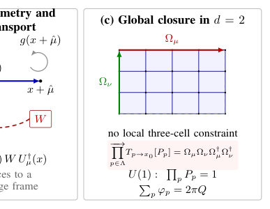
<figcaption class="paper-figure-caption"><b>Fig 1.</b> Figure 1: Links, gauge symmetry and the plaquette constraints. (a) Oriented links and the plaquette Pµν(x) they form. (b) Independent gauge transformations at neighbouring sites, and the parallel transport of W from x + ˆµ to the frame at x. (c) In d = 2 the only constraint is the global closure through the holonomies Ωµ and Ων.</figcaption>
</figure>
<figure class="paper-figure-card">
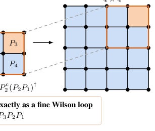
<figcaption class="paper-figure-caption"><b>Fig 2.</b> Figure 2: One refinement in plaquette space, for d = 2. Left: the coarse lattice; three plaquettes are free and P c 2 (orange) is fixed by the global closure. Centre: its top-right block, refined with P1, P2, P4 (blue) generated and P3 determined by P3 = P † 4 P c 2(P2P1)†. Right: the refined lattice; the orange outline marks the fine Wilson loop whose value is P c 2.</figcaption>
</figure>
<figure class="paper-figure-card">
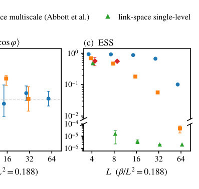
<figcaption class="paper-figure-caption"><b>Fig 3.</b> Figure 3: Two-dimensional U(1) along the line of constant physics β = 0.188L2. (a) KL(q∥p). (b) RA of the importance-weighted plaquette estimate against the exact finite-volume value. (c) ESS. Panels (a) and (c) use logarithmic axes with one break; points across a break are not directly comparable.</figcaption>
</figure>
<figure class="paper-figure-card">
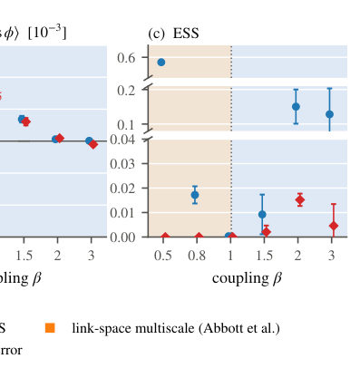
<figcaption class="paper-figure-caption"><b>Fig 4.</b> Figure 4: Four-dimensional U(1). (a) KL(q∥p) as a function of β. (b) RA of the importance- weighted estimate of ⟨cos φ⟩against the heatbath reference, with the grey band indicating the reference’s own uncertainty; points outside the plotted range are depicted as triangles at the panel edge, labeled with their values. (c) ESS, shown on a linear scale with two axis breaks. Background shading denotes the confined and Coulomb phases, separated at βc ≃1.011.</figcaption>
</figure>
<figure class="paper-figure-card">
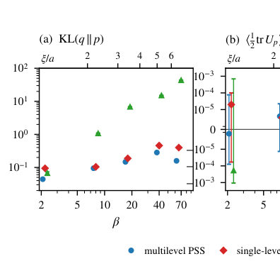
<figcaption class="paper-figure-caption"><b>Fig 5.</b> Figure 5: Two-dimensional SU(2), L = 16. (a) KL(q∥p). (b) RA of the importance-weighted estiamte of ⟨1</figcaption>
</figure>
</div>

<p><strong>Summary.</strong> This paper presents a novel Multilevel Plaquette-Space Sampler (PSS) designed to efficiently sample the complex distributions of lattice gauge theories. By reformulating the sampling problem using a coarse-to-fine factorization, it overcomes the limitations of traditional link-space samplers, particularly in the weak coupling regime. The method is validated by showing superior performance in calculating key physical observables like topological susceptibility.</p>
<p><strong>Why it may be interesting.</strong> While focused on gauge theory, the methodology—using multilevel normalizing flows to solve highly constrained, high-dimensional sampling problems—is a powerful general technique applicable to other complex many-body systems where constraints are present.</p>
<details>
<summary>Detailed structure</summary>
<p><strong>Main problem.</strong> The core challenge is developing an efficient sampling method for the high-dimensional probability distribution of lattice gauge theories while exactly satisfying the geometric Bianchi constraints.</p>
<p><strong>Main result.</strong> The proposed Multilevel Plaquette-Space Sampler (PSS) substantially outperforms link-space generative samplers, especially in the challenging weak coupling regime.</p>
<p><strong>Method.</strong> The authors introduce a multilevel normalizing-flow construction that factors the global constraint problem into a sequence of local, coarse-to-fine solves, allowing exact sampling in plaquette space.</p>
<p><strong>Model / system.</strong> The study focuses on Lattice Gauge Theories (e.g., U(1) and SU(2)) defined on a hypercubic lattice, governed by the Wilson action, which dictates the target Boltzmann distribution.</p>
<p><strong>Key observables.</strong> Effective Sample Size (ESS), Topological Susceptibility ($\chi_{	ext{top}}$), Wilson Loops ($\langle W 
angle$), and the KL divergence ($    ext{KL}(q|p)$).</p>
<p><strong>Important parameters / regimes.</strong> The gauge coupling ($eta$) and lattice size ($L$) are key parameters, with special interest in the weak coupling limit.</p>
<p><strong>Assumptions / limitations.</strong> The method assumes that the constraint completion maps ($R_i$) are fixed, bijective, and volume-preserving, and that coarse-to-fine satisfaction implies global satisfaction.</p>
<p><strong>Figures summary.</strong> Figures illustrate the lattice structure, gauge symmetry, and the global closure constraint in 2D. Other figures compare the performance of different samplers on observables like $\chi_{	ext{top}}$ and $   ext{KL}$ divergence.</p>
<p><strong>Paper structure.</strong> The paper introduces the physical problem and limitations of existing samplers, details the multilevel PSS construction using coarse-to-fine factorization, validates the method on $U(1)$ and $SU(2)$ in various dimensions, and concludes with quantitative comparisons against link-space baselines using diagnostics like $   ext{ESS}$ and $\chi_{	ext{top}}$.</p>
</details>
<details>
<summary>Abstract</summary>
<p>Lattice gauge theories are an important class of physical models with high-dimensional structured distributions that underpin first-principles calculations in particle, nuclear, and condensed-matter physics. Recent advances in generative modeling have opened new avenues for sampling Boltzmann distributions in lattice gauge theories, offering the potential to alleviate limitations of traditional Monte Carlo methods, including critical slowing down and topological freezing. However, generative samplers for lattice gauge theories are typically constructed in link space, where correlations become increasingly long-ranged toward weak coupling, posing a challenge for learning. Plaquettes provide a more natural representation, as the action is local in these variables. However, exact Bianchi constraints restrict them to a lower-dimensional manifold, complicating direct generative modeling. We introduce a multilevel normalizing-flow construction that samples directly in plaquette space while satisfying these constraints exactly. The key idea is a coarse-to fine factorization that transforms a globally coupled constraint problem into a sequence of local solves: at each refinement, every determined plaquette depends on at most four newly generated variables, while the size of the constraint problem remains independent of the lattice size. We validate the construction for $U(1)$ in two and four dimensions and for $SU(2)$ in two dimensions. Our multilevel Plaquette-Space Sampler (PSS) substantially outperforms link-space baselines, with the advantage increasing toward weak coupling, where the gauge coupling becomes small. This regime is particularly challenging for generative sampling and, in asymptotically free gauge theories, is relevant to continuum studies.</p>
</details>
<p><sub><a href="#top">↑ back to top</a></sub></p>

<p><a id="paper-2609.35380"></a></p>
<h3 id="pressure-induced-sp-d-electron-redistribution-accompanies-structural-transformation-in-amorphous-zr-cu-alloy-under-compression"><a href="http://arxiv.org/abs/2609.35380v1">Pressure-induced s,p-d electron redistribution accompanies structural transformation in amorphous Zr-Cu alloy under compression</a></h3>
<p><strong>Authors:</strong> P. Dziegielewski, J. Antonowicz, K. Georgarakis, O. Lord, M. Amboage, D. Daisenberger, L. Clough, T. Irifune, T. Shinmei<br>
<strong>Type:</strong> both · <strong>Category:</strong> disordered systems and neural networks · <strong>PDF:</strong> <a href="https://arxiv.org/pdf/2609.35380v1">https://arxiv.org/pdf/2609.35380v1</a><br>
<strong>Analysis basis:</strong> full PDF text, analyzed in chunks
<strong>Topic relevance:</strong> <code>Keldysh / 2PI / non-Gaussian methods</code> <strong>2/5</strong> · <code>methods for driven-dissipative</code> <strong>2/5</strong></p>
<div class="figure-strip-hint">↔ Scroll figures horizontally</div>
<div class="paper-figures-scroll">
<figure class="paper-figure-card">
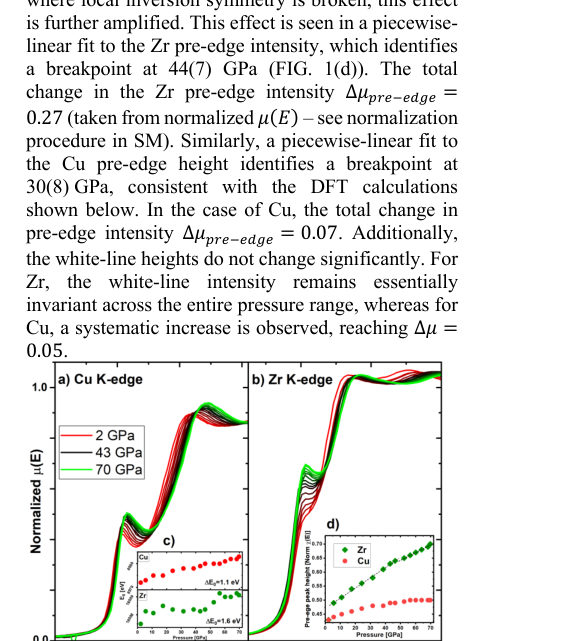
<figcaption class="paper-figure-caption"><b>Fig 1.</b> FIG. 1. Experimental XANES spectra for (a) Cu and (b) Zr absorption edges across a wide range of pressures. Insets (c) and (d) show the evolution of the absorption energy and normalized Zr and Cu pre-edge</figcaption>
</figure>
<figure class="paper-figure-card">
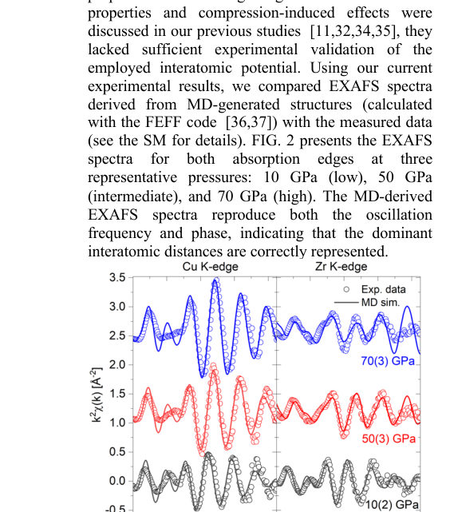
<figcaption class="paper-figure-caption"><b>Fig 2.</b> FIG. 2. Experimental EXAFS function (points) measured at three pressures: 10(2), 50(3), and 70(3) GPa, and calculated EXAFS functions (lines) based on atomic configurations from MD simulations.</figcaption>
</figure>
<figure class="paper-figure-card">
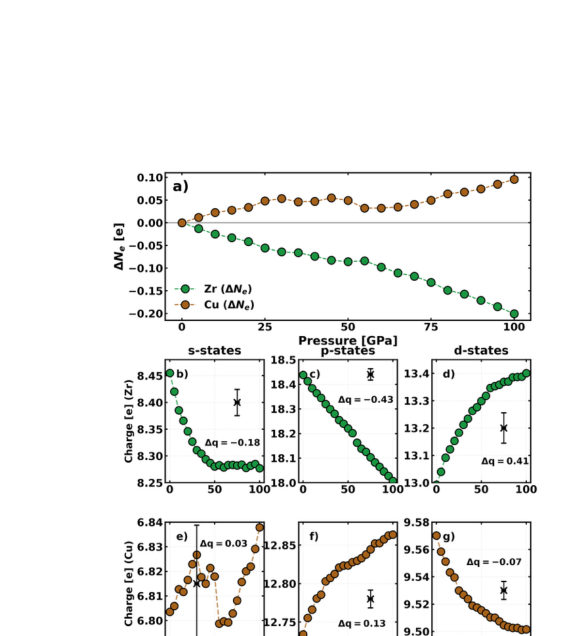
<figcaption class="paper-figure-caption"><b>Fig 3.</b> FIG. 3 (a) Net charge changes for Cu and Zr, and average Mulliken populations for (b–d) Zr and (e–g) Cu s, p, and d-states with the charge uncertainties. Simulation data are shown up to 100 GPa, extending beyond the experimental range of 70 GPa.</figcaption>
</figure>
<figure class="paper-figure-card">
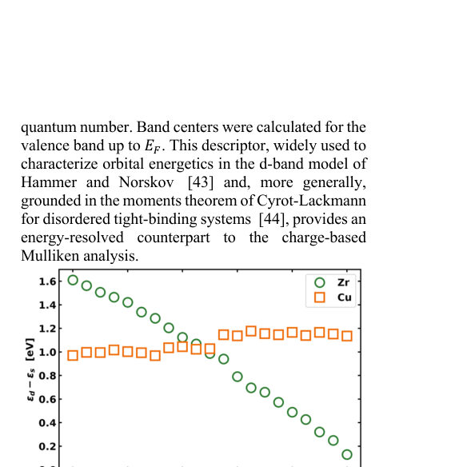
<figcaption class="paper-figure-caption"><b>Fig 4.</b> FIG. 5. Zr and Cu s-d band centers separation calculated up to EF.</figcaption>
</figure>
<figure class="paper-figure-card">
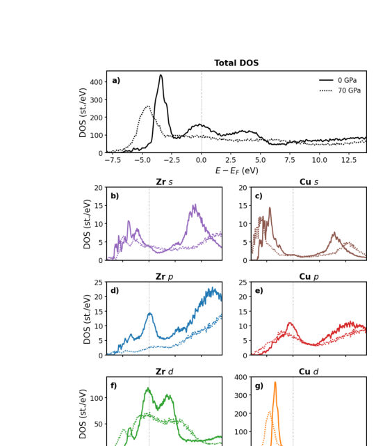
<figcaption class="paper-figure-caption"><b>Fig 5.</b> FIG. 4. Calculated total DOS (a) and partial DOSes for Zr (b, d, f) and Cu (c, e, g) s,p,d-states respectively at 0 GPa (solid lines) and 70 GPa (dashed lines).</figcaption>
</figure>
</div>

<p><strong>Summary.</strong> This paper experimentally and computationally investigates how compressing an amorphous $  ext{Zr-Cu}$ metallic glass alters its electronic structure. By analyzing XANES spectra and performing DFT calculations, the authors demonstrate a systematic redistribution of valence electrons from s and p orbitals into the d-band under high pressure. This links the observed electronic changes to the material's structural evolution.</p>
<p><strong>Why it may be interesting.</strong> While focused on condensed matter, the study of electronic structure evolution under extreme conditions and the use of advanced computational techniques (DFT/MD) to model complex, disordered materials is relevant to understanding highly correlated or disordered quantum systems.</p>
<details>
<summary>Detailed structure</summary>
<p><strong>Main problem.</strong> The study investigates how extreme compression induces electronic structure changes, specifically electron redistribution, in amorphous metallic alloys.</p>
<p><strong>Main result.</strong> The research provides evidence for pressure-induced s,p-d electronic redistribution in zirconium, characterized by depletion of s and p-states and an increase in d-state population.</p>
<p><strong>Method.</strong> The work combines high-pressure X-ray Absorption Near-Edge Structure (XANES) measurements with Molecular Dynamics (MD) simulations and Density Functional Theory (DFT) calculations.</p>
<p><strong>Model / system.</strong> The physical system is the amorphous $  ext{Zr}<em 33>{67}    ext{Cu}</em>$ metallic glass, studied under compression up to 69 GPa. The theoretical framework involves analyzing orbital hybridization and charge transfer mechanisms.</p>
<p><strong>Key observables.</strong> XANES pre-edge intensity, Mulliken populations ($  ext{s, p, d}$ orbital populations), Density of States (DOS), and Pair Distribution Functions ($ ext{PDFs}$).</p>
<p><strong>Important parameters / regimes.</strong> Pressure range up to 69 GPa; specific breakpoints identified for electronic changes (e.g., 32 GPa for $ ext{Zr}$ s-electron depletion).</p>
<p><strong>Assumptions / limitations.</strong> The analysis relies on interpreting spectral shape changes (pre-edge intensity) as evidence of hybridization, and uses the Mulliken scheme for charge analysis.</p>
<p><strong>Figures summary.</strong> Figures illustrate XANES spectra showing pre-edge evolution, comparisons between experimental and simulated EXAFS spectra, and plots detailing charge transfer ($\Delta q$) and orbital-resolved populations across pressure.</p>
<p><strong>Paper structure.</strong> The paper follows a structure of presenting experimental XANES data, validating local structure using MD/EXAFS, and finally interpreting the electronic changes using DFT calculations to quantify s,p-d electron redistribution.</p>
</details>
<details>
<summary>Abstract</summary>
<p>Extreme compression can reorganize atomic valence states, in some regimes driving charge from spatially extended orbitals into more compact ones. We investigate this effect in amorphous Zr67Cu33 metallic glass by combining high-pressure X-ray absorption fine structure measurements up to 69 GPa with molecular dynamics simulations and density functional theory calculations. The Zr K-edge XANES spectra show a pronounced increase in the pre-edge intensity and a change in its pressure dependence, whereas the Cu response is markedly weaker. Molecular-dynamics simulations reproduce the measured EXAFS spectra and provide reliable input for the electronic-structure calculations. The calculated Mulliken populations reveal pressure-induced depletion of Zr s and p-states, accompanied by an increase of the d-state population, while the density of states indicates enhanced p-d hybridization under compression. These results provide experimental and computational evidence for pressure-induced s,p-d electronic redistribution in zirconium and link this effect to the previously reported anomalous structural evolution of the compressed amorphous alloy.</p>
</details>
<p><sub><a href="#top">↑ back to top</a></sub></p>

<p><a id="paper-2609.31934"></a></p>
<h3 id="quantum-error-mitigation-from-information-dynamics"><a href="http://arxiv.org/abs/2609.31934v1">Quantum error mitigation from information dynamics</a></h3>
<p><strong>Authors:</strong> Philippe Suchsland, Thomas Schuster, Manuel S. Rudolph, Nicholas Noll, Thomas E. O'Brien, Zlatko K. Minev<br>
<strong>Type:</strong> theory · <strong>Category:</strong> quantum information and computing · <strong>PDF:</strong> <a href="https://arxiv.org/pdf/2609.31934v1">https://arxiv.org/pdf/2609.31934v1</a><br>
<strong>Analysis basis:</strong> full PDF text, analyzed in chunks
<strong>Topic relevance:</strong> <code>quantum measurements</code> <strong>2/5</strong> · <code>Keldysh / 2PI / non-Gaussian methods</code> <strong>1/5</strong> · <code>methods for driven-dissipative</code> <strong>1/5</strong></p>
<div class="figure-strip-hint">↔ Scroll figures horizontally</div>
<div class="paper-figures-scroll">
<figure class="paper-figure-card">
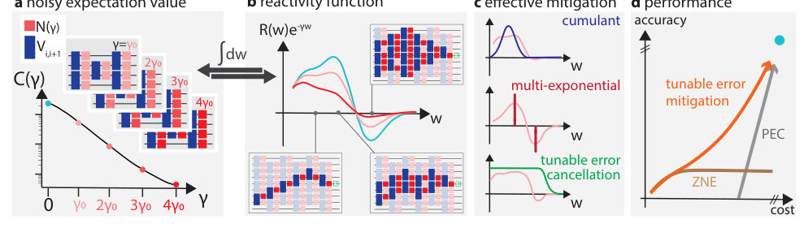
<figcaption class="paper-figure-caption"><b>Fig 1.</b> FIG. 1. Schematic illustration of our results, which relate noisy quantum circuit expectation values, the reactivity function, and quantum error mitigation. a The quantum circuit expectation value, C(γ), as a function of the noise rate γ. We assume local noise channels N(γ) (red) after every two-qubit gate (dark blue). The goal of error mitigation is to infer the noiseless expectation value, C(0), from noisy quantum experiments; here γ0 denotes the native device noise rate. b The behavior of C(γ) can be understood by decomposing the expectation value as a sum of paths of quantum information (insets). The reactivity function, R(w), quantifies the total contribution from all paths of weight w...</figcaption>
</figure>
<figure class="paper-figure-card">
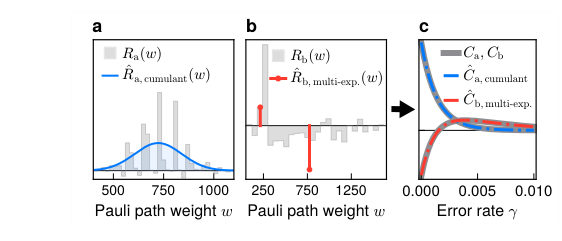
<figcaption class="paper-figure-caption"><b>Fig 2.</b> FIG. 2. Reactivity R(w) examples, different effective de- scriptions ˆR(w) and the resulting noisy signal decay curve C(γ), Eq. (9). a Example 1: R(w) is predominantly positive yielding a good agreement between C(γ) (c, gray) and the fit using the cumulant expansion (c, blue). b Example 2: R(w) splits into a negative and a positive part so that the multi- exponential ansatz fit with two exponentials (c red) yields good agreement with C(γ) (c gray). c Comparison between noisy signal C(γ) and fits corresponding to the effective reac- tivity descriptions shown in a and b.</figcaption>
</figure>
<figure class="paper-figure-card">
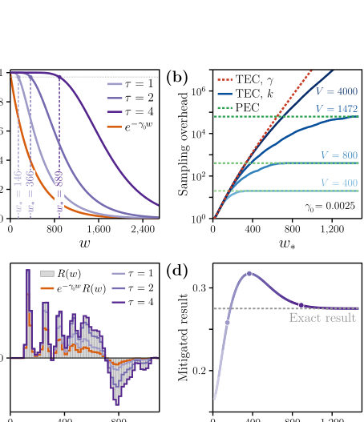
<figcaption class="paper-figure-caption"><b>Fig 3.</b> FIG. 3. Illustration of tunable error cancellation (TEC). (a) The relative damping of a Pauli path of weight w compared to its noiseless value, e−γwhτ(w), for three values of the tun- ing parameter τ at γ0 = 0.0025. Dashed lines indicate the threshold weight w∗such that |1−e−γ0w∗hτ(w∗)| ≤0.03. Or- ange lines show relative damping, e−γ0w, before mitigation. (b) Sampling overhead X(w∗) of TEC with noise amplifica- tion (red), TEC with discrete noise events (blue), and PEC (green). The first is independent of the circuit size V . (c) Reactivity function of the TFIM (4×4, t = 23, V = 1472), for the exact circuit (gray histogram), the noisy circuit (orange), and after TEC (purple). (d) The...</figcaption>
</figure>
<figure class="paper-figure-card">
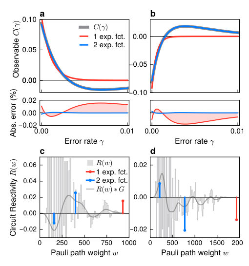
<figcaption class="paper-figure-caption"><b>Fig 4.</b> FIG. 5. Noise response of the Z expectation value for a 4 × 4 XY model with gradient magnetic field at time steps 30 (left) and 48 (right), Eq. (38). Top: Decay of the signal under sin- gle qubit depolarizing noise with rate γ (blue). While one exponential ˆC1(γ) = ˆR1e−w1γ (orange) is insufficient to de- scribe C(γ), the fit ˆC2(γ) = ˆR1e−w1γ + ˆR2e−w2γ (red) agrees well with C(γ). Bottom: Binned Reactivity (filled gray) and Gaussian convolution of R(w) with a Gaussian kernel with rate γG = 0.02. The δ-peaks denote the fit results ( ˆRi,wi) for the single exponential (blue) and double exponential (red). While the single exponential fit (red) disregard too much in- formation in the...</figcaption>
</figure>
<figure class="paper-figure-card">
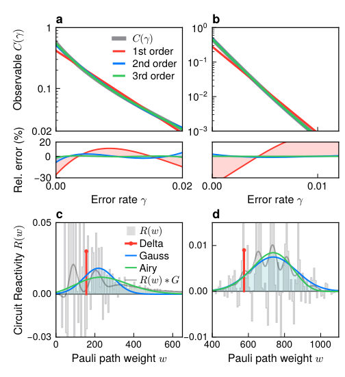
<figcaption class="paper-figure-caption"><b>Fig 5.</b> FIG. 4. Noise response and reactivity of the NMR OTOC on toluene (left) and DMBP (right) molecule systems. (a, b) De- cay of the expectation value C(γ) under single-qubit depolar- izing noise at rate γ (thick gray curve), compared with 1st- order (red), 2nd-order (blue), and 3rd-order (green) cumulant expansion fits. The panels directly below show the relative fit residuals (Cfit−Cexact)/Cexact×100%, with shaded fills to the zero baseline. The 1st-order (exponential) fit exhibits system- atic deviations up to ∼30%, while the 2nd- and 3rd-order fits remain within a few percent across the full noise range. (c, d) Circuit reactivity spectra R(w) as a function of total Pauli path weight w. The...</figcaption>
</figure>
</div>

<p><strong>Summary.</strong> This paper introduces the reactivity function as a compact descriptor for understanding how quantum circuits respond to noise. Using this function, the authors develop two advanced error mitigation techniques—Pauli-path zero-noise extrapolation and tunable error cancellation. These methods allow for accurate estimation of ideal quantum results by systematically correcting for experimental noise biases.</p>
<p><strong>Why it may be interesting.</strong> This work provides a powerful, unifying theoretical framework (the reactivity function) to analyze and systematically mitigate noise in quantum computations, which is crucial for scaling up quantum hardware.</p>
<details>
<summary>Detailed structure</summary>
<p><strong>Main problem.</strong> The central challenge is overcoming experimental errors in large quantum circuits, where the impact of noise is exponentially complex to analyze directly.</p>
<p><strong>Main result.</strong> The authors introduce two novel error mitigation techniques, Pauli-path zero-noise extrapolation and tunable error cancellation, which significantly outperform conventional methods.</p>
<p><strong>Method.</strong> The methods are built upon the 'reactivity function,' a compact representation of the circuit's information dynamics, allowing for systematic extrapolation to the noiseless limit.</p>
<p><strong>Model / system.</strong> The work analyzes quantum circuits subjected to various noise channels, modeling the noise impact through the reactivity function, which characterizes how the circuit's expectation value reacts to noise.</p>
<p><strong>Key observables.</strong> Reactivity function R(w), noisy expectation values C(gamma), and the signal fidelity f = C(gamma)/C(0).</p>
<p><strong>Important parameters / regimes.</strong> Tuning parameters for the mitigation methods, noise rates (gamma), and the locality threshold for error cancellation.</p>
<p><strong>Assumptions / limitations.</strong> The analysis assumes the noise can be characterized by the reactivity function, which is derived from the noisy expectation value via a Laplace transform.</p>
<p><strong>Figures summary.</strong> Figures illustrate the relationship between noisy expectation values, the reactivity function, and the performance comparison between different mitigation techniques.</p>
<p><strong>Paper structure.</strong> The paper introduces the reactivity function, details Pauli-path zero-noise extrapolation (PP-ZNE), presents tunable error cancellation (TEC), and concludes with numerical studies comparing the methods.</p>
</details>
<details>
<summary>Abstract</summary>
<p>Overcoming experimental errors is a central challenge in quantum science. This challenge is particularly acute in large and complex quantum circuits, where quantum information spreads into exponentially many paths, foiling any direct attempt to understand errors' impact. In this work, we present a novel approach to understanding and mitigating experimental errors, based on a surprisingly compact representation of a quantum circuit's information dynamics, the reactivity function. The shape of a circuit's reactivity function governs its noise response, and its amenability to different error mitigation methods. From this viewpoint, we introduce two complementary such methods. The first, Pauli-path zero-noise extrapolation, fits a parameterized model to a circuit's reactivity function and uses it to accurately extrapolate to zero noise. The second, tunable error cancellation, filters a circuit's reactivity function to cancel noise on all information up to a threshold locality. Crucially, both methods feature a tuning parameter that allows one to systematically improve their accuracy until convergence. Across three circuit families from published experiments, our methods overcome conventional zero-noise extrapolation biases as large as 30%; at $\sim$$10^{-2}$ root-mean-square error, they reduce sampling cost relative to probabilistic error cancellation by up to a factor of $10^3$.</p>
</details>
<p><sub><a href="#top">↑ back to top</a></sub></p>

<p><a id="paper-2609.34607"></a></p>
<h3 id="quantum-geometric-amplification-of-nonperturbative-interaction-scales"><a href="http://arxiv.org/abs/2609.34607v1">Quantum-Geometric Amplification of Nonperturbative Interaction Scales</a></h3>
<p><strong>Authors:</strong> Stefano Bilamour, René Meyer, Johanna Erdmenger, Domenico Di Sante<br>
<strong>Type:</strong> theory · <strong>Category:</strong> strongly correlated electrons · <strong>PDF:</strong> <a href="https://arxiv.org/pdf/2609.34607v1">https://arxiv.org/pdf/2609.34607v1</a><br>
<strong>Analysis basis:</strong> full PDF text, analyzed in chunks
<strong>Topic relevance:</strong> <code>Keldysh / 2PI / non-Gaussian methods</code> <strong>2/5</strong> · <code>analog quantum simulation</code> <strong>1/5</strong> · <code>quantum measurements</code> <strong>1/5</strong></p>
<div class="figure-strip-hint">↔ Scroll figures horizontally</div>
<div class="paper-figures-scroll">
<figure class="paper-figure-card">
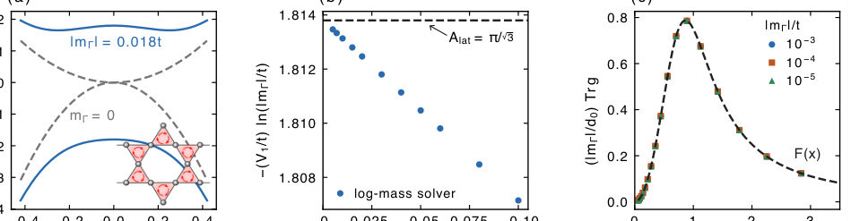
<figcaption class="paper-figure-caption"><b>Fig 1.</b> FIG. 1. (a) Low-energy dispersion along qy = 0 near the Γ-point QBT for the regularized kagome lattice at r/t = 0.05. Energies are measured relative to EΓ = 2t. Dashed curves show the ungapped case mΓ = 0; solid curves show a representative QAH mass |mΓ| = 0.018t from loop currents (see inset) corresponding to (a deliberately large for plotting purposes) V1/t ≃0.44 from the weak-coupling lattice mass relation Eq. (6). (b) Weak-coupling scaling of the interaction-generated lattice mass. The quantity −(V1/t) ln(|mΓ|/t), obtained from the scalar log-mass self-consistency equation, approaches the parameter-free asymptotic coefficient Alat = π/ √</figcaption>
</figure>
<figure class="paper-figure-card">
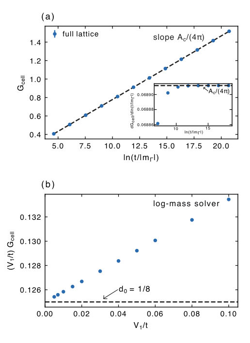
<figcaption class="paper-figure-caption"><b>Fig 2.</b> FIG. 2. (a) Full-lattice integrated quantum metric Gcell as a function of ln(t/|mΓ|). The weak-mass data approach the QBT prediction with slope Ac/(4π). Inset: logarithmic deriva- tive dGcell/d ln(t/|mΓ|), showing convergence to the analytic coefficient Ac/(4π) = 0.068916. (b) Interaction dependence of the integrated metric. Combining the logarithmic geomet- ric singularity with the nonperturbative self-consistent mass gives Gcell ∼d0/V1; the full-lattice numerical data approach (V1/t)Gcell = 1/8 for the kagome model.</figcaption>
</figure>
<figure class="paper-figure-card">
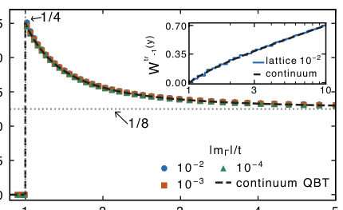
<figcaption class="paper-figure-caption"><b>Fig 3.</b> FIG. 3. Longitudinal optical conductivity as a function of the scaled frequency y = Ω/(2|mΓ|). Full-lattice results for decreasing QAH masses collapse onto the continuum QBT prediction above the absorption threshold y = 1, with thresh- old value 1/4 and asymptotic plateau 1/8. Inset: cumula- tive inverse-frequency optical weight, showing the logarithmic growth generated by the QBT optical plateau.</figcaption>
</figure>
</div>

<p><strong>Summary.</strong> This work demonstrates that quantum geometry can act as an asymptotic amplifier, converting an exponentially small, nonperturbative symmetry-breaking gap into a measurable, algebraically enhanced response. Using the kagome lattice model at a QBT, the authors show that the integrated quantum metric and optical response scale as $1/V_1$, providing a robust diagnostic tool for such weak-coupling physics.</p>
<p><strong>Why it may be interesting.</strong> The concept of quantum geometry acting as an asymptotic amplifier provides a powerful, non-perturbative tool to extract measurable signatures from exponentially small energy scales, which is relevant for understanding exotic phases in correlated electron systems.</p>
<details>
<summary>Detailed structure</summary>
<p><strong>Main problem.</strong> The paper investigates how quantum geometry can amplify nonperturbative interaction scales, converting an exponentially small symmetry-breaking gap into an algebraically enhanced response.</p>
<p><strong>Main result.</strong> The exponentially small gap scale, $m \sim e^{-A/V_1}$, is converted into an algebraically large integrated geometric response, $G_{	ext{cell}} \sim 1/V_1$.</p>
<p><strong>Method.</strong> The analysis combines analytical derivations using continuum QBT Hamiltonians with microscopic verification using the kagome lattice model, employing variable transformations to handle exponentially small parameters.</p>
<p><strong>Model / system.</strong> The study focuses on weak interactions at a two-dimensional quadratic band touching (QBT) point, modeled using spinless fermions on the kagome lattice with repulsive nearest-neighbor interactions.</p>
<p><strong>Key observables.</strong> Integrated quantum metric ($G_{	ext{cell}}$), negative-first longitudinal optical moment ($W_{	ext{tr}}^{-1}$), and the gap mass $|m_\Gamma|$.</p>
<p><strong>Important parameters / regimes.</strong> Interaction strength ($V_1$), the exponentially small gap scale ($m \sim e^{-A/V_1}$), and the lattice parameters ($t, r$).</p>
<p><strong>Assumptions / limitations.</strong> The analysis relies on the QBT structure and the assumption that the gap is generated by marginal interactions; regularization ($r>0$) is used to isolate the QBT physics.</p>
<p><strong>Figures summary.</strong> Figures illustrate the low-energy dispersion near the QBT, the weak-coupling scaling of the interaction-generated lattice mass, and the scaling collapse of the quantum-metric trace demonstrating $1/|m_\Gamma|$ growth.</p>
<p><strong>Paper structure.</strong> The paper develops the theory by first analyzing the continuum QBT, deriving the logarithmic divergence of the quantum metric, and then applying this framework to the full kagome lattice model, culminating in the calculation of the measurable optical moment.</p>
</details>
<details>
<summary>Abstract</summary>
<p>Weak interactions at a two-dimensional quadratic band touching (QBT) can generate an exponentially small symmetry-breaking gap, $m\sim e^{-A/V_1}$, that cannot be captured by every finite order of perturbation theory. We show that the singular quantum geometry of the gapped QBT converts this beyond-all-orders scale into an algebraically enhanced response. The quantum metric develops a momentum-space hot spot whose Brillouin-zone integral diverges logarithmically, and therefore grows algebraically when the gap is dynamically generated by interactions. Through the inverse-frequency Souza--Wilkens--Martin optical sum rule, the same amplification appears in the negative-first longitudinal optical moment, even though the ordinary optical conductivity remains $O(e^2/\hbar)$ and its absorption threshold is exponentially small. We establish these results analytically for a massive QBT and verify them microscopically in an interacting kagome lattice model known to develop a spontaneous quantum anomalous Hall mass at its QBT from loop currents order. Our results identify quantum geometry as an asymptotic amplifier of nonperturbative interaction scales.</p>
</details>
<p><sub><a href="#top">↑ back to top</a></sub></p>

<p><a id="paper-2609.33806"></a></p>
<h3 id="superconducting-pairing-symmetry-on-geometric-algebra-foundations-via-the-scalar-projection-method"><a href="http://arxiv.org/abs/2609.33806v1">Superconducting Pairing Symmetry on Geometric-Algebra Foundations via the Scalar-Projection Method</a></h3>
<p><strong>Authors:</strong> Youping Dai<br>
<strong>Type:</strong> theory · <strong>Category:</strong> strongly correlated electrons · <strong>PDF:</strong> <a href="https://arxiv.org/pdf/2609.33806v1">https://arxiv.org/pdf/2609.33806v1</a><br>
<strong>Analysis basis:</strong> full PDF text, analyzed in chunks
<strong>Topic relevance:</strong> <code>Keldysh / 2PI / non-Gaussian methods</code> <strong>2/5</strong> · <code>analog quantum simulation</code> <strong>1/5</strong> · <code>quantum measurements</code> <strong>1/5</strong></p>
<div class="figure-strip-hint">↔ Scroll figures horizontally</div>
<div class="paper-figures-scroll">
<figure class="paper-figure-card">
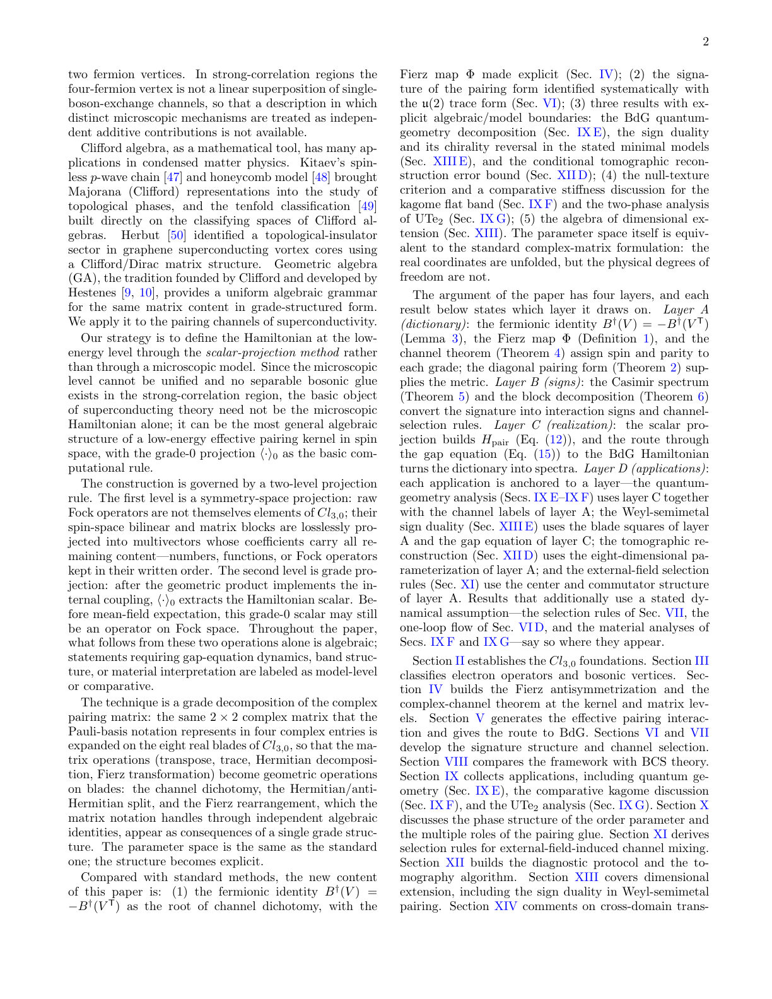
<figcaption class="paper-figure-caption"><b>Fig 1.</b> Low-resolution page preview, page 2</figcaption>
</figure>
<figure class="paper-figure-card">
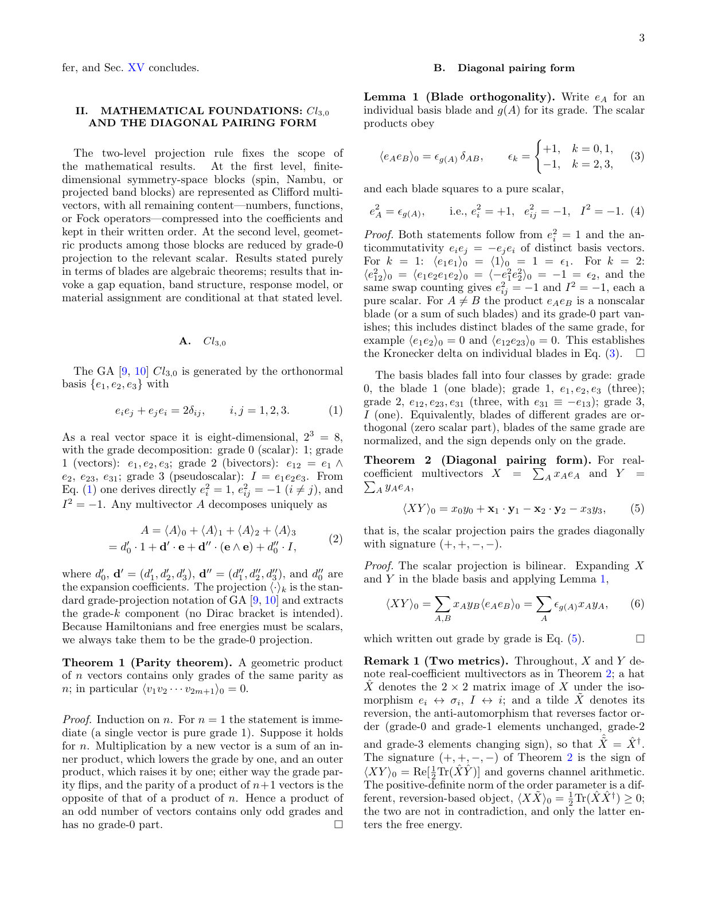
<figcaption class="paper-figure-caption"><b>Fig 2.</b> Low-resolution page preview, page 3</figcaption>
</figure>
<figure class="paper-figure-card">
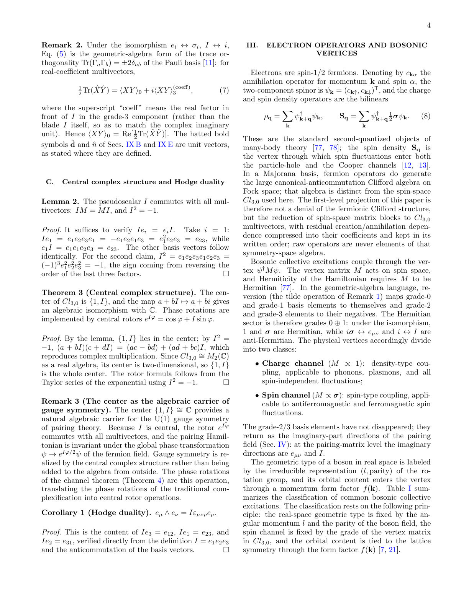
<figcaption class="paper-figure-caption"><b>Fig 3.</b> Low-resolution page preview, page 4</figcaption>
</figure>
<figure class="paper-figure-card">
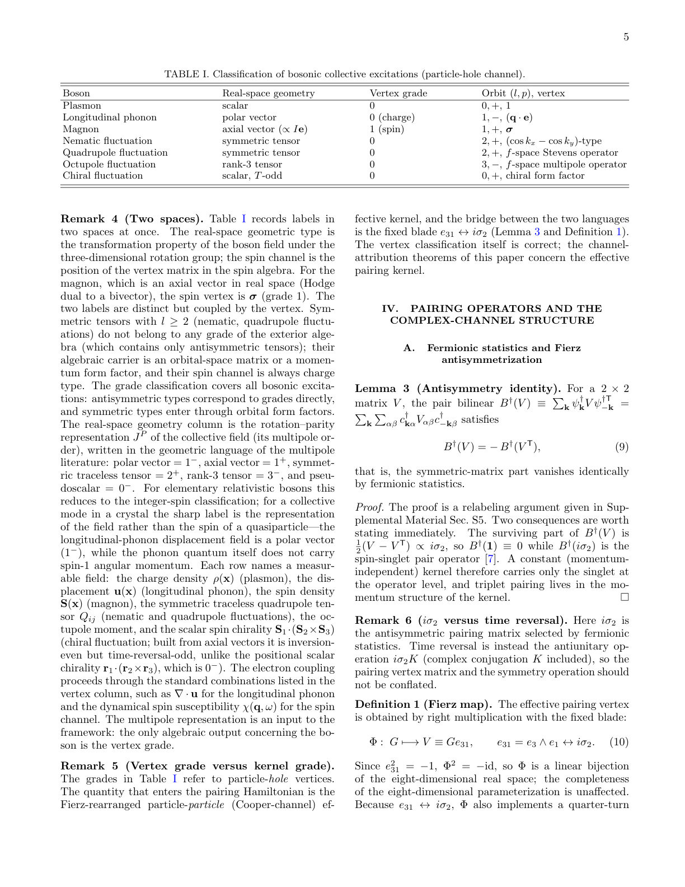
<figcaption class="paper-figure-caption"><b>Fig 4.</b> Low-resolution page preview, page 5</figcaption>
</figure>
<figure class="paper-figure-card">

<figcaption class="paper-figure-caption"><b>Fig 5.</b> Low-resolution page preview, page 6</figcaption>
</figure>
</div>

<p><strong>Summary.</strong> This paper develops a highly abstract, yet powerful, algebraic framework for describing superconducting pairing symmetry using Geometric Algebra. It reformulates standard BCS theory by projecting complex matrix structures into scalar Hamiltonians via a scalar-projection method. The work yields fundamental algebraic theorems applicable to diagnosing superconducting phases and topological properties in correlated materials.</p>
<p><strong>Why it may be interesting.</strong> While focused on superconductivity, the rigorous algebraic machinery (Clifford algebra, projection methods) provides a powerful, unified mathematical language applicable to other strongly correlated systems where symmetry constraints are paramount.</p>
<details>
<summary>Detailed structure</summary>
<p><strong>Main problem.</strong> The paper aims to formulate the low-energy theory of superconducting pairing symmetry using a novel algebraic framework.</p>
<p><strong>Main result.</strong> It establishes an algebraic reconstruction of pairing theory using Geometric Algebra, yielding specific theorems regarding BdG quantum geometry and Fierz sign duality.</p>
<p><strong>Method.</strong> The core method is the Scalar-Projection Method applied within the framework of Geometric Algebra (Cl_{3,0}), projecting complex matrix blocks onto scalar Hamiltonians.</p>
<p><strong>Model / system.</strong> The theory applies to superconducting pairing in various materials (e.g., UTe2, CsV3Sb5) and models, drawing parallels to BCS theory and heavy-fermion systems.</p>
<p><strong>Key observables.</strong> Gap matrices (E1, O1, etc.), anomalous correlators, and the superconducting order parameter ($\Delta_0$).</p>
<p><strong>Important parameters / regimes.</strong> The pairing symmetry channels (singlet/triplet), the Fermi surface topology, and the gap-equation self-consistency condition.</p>
<p><strong>Assumptions / limitations.</strong> The analysis relies on specific algebraic identities (e.g., fermionic identity) and assumes certain minimal node structures for chirality-reversal theorems.</p>
<p><strong>Figures summary.</strong> The notes mention tables comparing the framework to Landau theory and derivations for four gap matrices (E1, O1, O3, O2, O4) leading to energy eigenvalues.</p>
<p><strong>Paper structure.</strong> The paper is highly structured, moving from the general algebraic formulation (Clifford algebra, scalar projection) to specific physical results: decomposition theorems for BdG geometry, Fierz duality in Minkowski algebra, and detailed model analyses for specific superconductors (UTe2, Weyl semimetals).</p>
</details>
<details>
<summary>Abstract</summary>
<p>We formulate the low-energy theory of superconducting pairing in the geometric algebra $Cl_{3,0}$. Conventional BCS mean-field theory and its extensions ($s$-, $p$-, $d$-wave, etc.) have algebraic counterparts in an eight-dimensional real multivector space. The construction is a two-level projection: matrix blocks are represented as Clifford multivectors, and their grade-0 projected geometric products extract the scalar blocks from which Hamiltonians are built. The result is an algebraic reconstruction, physically equivalent to the standard complex-matrix formulation. In this reconstruction, the dichotomy of pairing channels acquires an algebraic root: it follows from the fermionic identity $B^\dagger(V)=-B^\dagger(V^{\mathsf T})$, and the Fierz rearrangement is realized by the map $Φ:G\mapsto Ge_{31}$ (with $e_{31}^2=-1$). This yields a kernel/matrix dictionary: at the effective-kernel level grades $0\oplus3$ correspond to spin singlets and grades $1\oplus2$ to triplets; at the pairing-matrix level the singlet plane is $\mathrm{span}\{e_2,e_{31}\}$. The BCS limit has a double grade identity: kernel grade 0 (scalar glue) and vertex grade 2, a bivector ($iσ_2\leftrightarrow e_{31}$). We state three algebraic results: (i) a decomposition theorem for BdG quantum geometry with a null-texture criterion, applied to the chiral-state controversy in CsV$_3$Sb$_5$; (ii) a Fierz sign duality in the four-dimensional Minkowski algebra, with a chirality-reversal extension to two-node Weyl-semimetal models; (iii) an error bound and condition-number structure for tomographic reconstruction under a linear-response probe model. Illustrations include a glue-generation mechanism, a one-loop algebraic renormalization flow whose feeding constant coincides in magnitude with the $\mathfrak{su}(2)$ Casimir, closed-form $μ=0$ inter-node spectra, and a UTe$_2$ two-phase analysis.</p>
</details>
<p><sub><a href="#top">↑ back to top</a></sub></p>

<p><a id="paper-2609.35602"></a></p>
<h3 id="chiral-weyl-kondo-semimetal-and-circular-photogalvanic-effect-in-a-prototype-kondo-lattice-system"><a href="http://arxiv.org/abs/2609.35602v1">Chiral Weyl--Kondo semimetal and circular photogalvanic effect in a prototype Kondo lattice system</a></h3>
<p><strong>Authors:</strong> Yuan Fang, Kuan-Sen Lin, Mounica Mahankali, Arushi, Kevin Allen, Sanu Mishra, Emilia Morosan, Qimiao Si<br>
<strong>Type:</strong> theory · <strong>Category:</strong> strongly correlated electrons · <strong>PDF:</strong> <a href="https://arxiv.org/pdf/2609.35602v1">https://arxiv.org/pdf/2609.35602v1</a><br>
<strong>Analysis basis:</strong> full PDF text, analyzed in chunks
<strong>Topic relevance:</strong> <code>Keldysh / 2PI / non-Gaussian methods</code> <strong>2/5</strong> · <code>analog quantum simulation</code> <strong>1/5</strong></p>
<div class="figure-strip-hint">↔ Scroll figures horizontally</div>
<div class="paper-figures-scroll">
<figure class="paper-figure-card">

<figcaption class="paper-figure-caption"><b>Fig 1.</b> FIG. 1. Schematic of Weyl and anti-Weyl points formed by heavy fermion quasiparticles sit at different energies [10]. The energy scale of cWKSM is the Kondo energy kBTK. Shin- ing light excites the quasiparticles out of thermal equilibrium, leading to a net photocurrent. The red dotted line indicates resonant momenta. Solid and dashed red arrow indicate ex- citations with large and small transitions rates, respectively.</figcaption>
</figure>
<figure class="paper-figure-card">

<figcaption class="paper-figure-caption"><b>Fig 2.</b> FIG. 2. (a) Schematic of crystal structure of the prototype model for chiral Weyl–Kondo semimetal in space group no. 78 (P43). The dashed gray box indicates the unit cell. (b) Saddle point solution of the Kondo lattice model in the parton representation. Red color indicates f orbital weight in the states. (c) Zoom-in of the f-electron dominated narrow bands near the Fermi energy. The bandwidth gives the order of Kondo temperature TK.</figcaption>
</figure>
<figure class="paper-figure-card">

<figcaption class="paper-figure-caption"><b>Fig 3.</b> FIG. 3. (a) Dispersion of a single f-electron dominated Weyl node and the c-electron dominated Weyl node. Both nodes have the same chiral charge C = 1. Here we take the renormalized hybridization V ∗= 0.2. (b) The CPGE response β as a function of frequency ω for several hybridiza- tion strengths V ∗. (c) The dispersion of the renormalized f-electron-dominated Weyl nodes and anti-Weyl nodes near the Fermi energy in our prototype model of space group no. 78 (P43). The two accordian nodes along Γ −Z and M −A have chiral charge C = 2 [39, 41] and the accidental Weyl point at general momentum has chiral charge C = −1. Here k0 = (0.372π, π, 0.572π). By considering the symmetry- related Weyl...</figcaption>
</figure>
</div>

<p><strong>Summary.</strong> This work develops a theoretical model for chiral Weyl-Kondo semimetals, demonstrating how strong electron correlations induce topological Weyl fermions. By calculating the Circular Photogalvanic Effect, the authors show that these Kondo-driven topological nodes leave a unique, sharp resonance signature in the optical response spectrum. This provides a spectroscopic pathway to identify strongly correlated topological matter.</p>
<p><strong>Why it may be interesting.</strong> The connection between strong electronic correlations (Kondo physics) and topological responses (Weyl nodes) is highly relevant to understanding exotic quantum materials and their optical properties.</p>
<details>
<summary>Detailed structure</summary>
<p><strong>Main problem.</strong> The paper aims to understand the emergence and spectroscopic identification of topological fermions, specifically chiral Weyl quasiparticles, in strongly correlated systems driven by Kondo interactions.</p>
<p><strong>Main result.</strong> The model robustly demonstrates symmetry-enforced Kramers Weyl fermions, and these topological nodes manifest as sharp, resonance-like peaks in the Circular Photogalvanic Effect (CPGE) frequency spectrum.</p>
<p><strong>Method.</strong> The study employs a prototype Kondo lattice model solved using the infinite-U limit and the parton method, followed by calculating the nonlinear optical response (CPGE) using Green's function techniques.</p>
<p><strong>Model / system.</strong> The system is a chiral Weyl-Kondo semimetal (cWKSM) modeled by a Kondo lattice Hamiltonian incorporating conduction and localized f-electron states, respecting tetragonal crystalline symmetries.</p>
<p><strong>Key observables.</strong> Chiral Weyl nodes, Kramers–Weyl points, and the Circular Photogalvanic Effect (CPGE) spectrum ($eta$ vs $\omega$).</p>
<p><strong>Important parameters / regimes.</strong> Strong correlation regime ($U \gg$ bandwidth), Kondo temperature ($T_K$), and the frequency ($\omega$) relative to the Kondo resonance.</p>
<p><strong>Assumptions / limitations.</strong> The analysis relies on constructing a prototype model with essential couplings and utilizes the saddle-point approximation in the infinite-U limit.</p>
<p><strong>Figures summary.</strong> Figures illustrate the schematic of Weyl/anti-Weyl points, the crystal structure, the quasiparticle band dispersion, and the calculated CPGE response showing characteristic resonance peaks.</p>
<p><strong>Paper structure.</strong> The paper develops the model Hamiltonian, analyzes the symmetry-enforced topological nodes (Weyl/Kramers points), and then calculates the CPGE response, demonstrating how Kondo correlations modify the expected optical signature.</p>
</details>
<details>
<summary>Abstract</summary>
<p>Chiral Weyl--Kondo semimetals (cWKSM) provide a setting in which chiral Weyl quasiparticles emerge in the immediate vicinity of the Fermi energy from a Kondo-driven reconstruction of the strongly correlated electronic states in chiral heavy fermion systems (K.-S. Lin et al., arXiv:2602.22185). A defining characteristic of this strongly correlated topological state is the Kramers chiral Weyl fermions in the low-energy quasiparticle states. Recently, experiments in CeGaGe have emerged as a concrete realization of the proposed effect (Arushi et al., preprint). Motivated by these findings, here we go beyond the materials-specific effects by constructing a prototype Kondo lattice model; it incorporates only the essential couplings that respect the associated tetragonal crystalline symmetries. This simplification allows us to robustly demonstrate the symmetry-enforced Kramers Weyl fermions and related topological nodal states in the spectrum of heavy quasiparticles. Furthermore, the simplification provides a tractable setting to determine the salient features in the system's nonlinear optical response, the circular photogalvanic effect, in chiral Weyl--Kondo semimetals. Both analytical and numerical calculations identify sharp peaks in the frequency domain as signatures of the Kondo-driven chiral Weyl nodes; the sharpness of the spectrum reflects the resonant nature of the underlying strongly correlated electronic excitations. Thus, cWKSM provides a unique setting to spectroscopically identify topological fermions that are induced by strong electron correlations. As such, our results are expected to bring about much needed new insights into the understanding of strongly correlated gapless topological matter.</p>
</details>
<p><sub><a href="#top">↑ back to top</a></sub></p>

<p><a id="paper-2609.31915"></a></p>
<h3 id="facial-classification-using-hybrid-quantum-machine-learning"><a href="http://arxiv.org/abs/2609.31915v1">Facial classification Using Hybrid Quantum Machine Learning</a></h3>
<p><strong>Authors:</strong> Roshan Babu Bandlapalli, Srinivas V Katakam, Jitendra Chougala, Ravi Kumar Kappagantu, Jayasri Dontabhaktuni<br>
<strong>Type:</strong> both · <strong>Category:</strong> quantum information and computing · <strong>PDF:</strong> <a href="https://arxiv.org/pdf/2609.31915v1">https://arxiv.org/pdf/2609.31915v1</a><br>
<strong>Analysis basis:</strong> full PDF text, analyzed in chunks
<strong>Topic relevance:</strong> <code>QC/QI experiment</code> <strong>2/5</strong> · <code>quantum measurements</code> <strong>1/5</strong></p>
<div class="figure-strip-hint">↔ Scroll figures horizontally</div>
<div class="paper-figures-scroll">
<figure class="paper-figure-card">

<figcaption class="paper-figure-caption"><b>Fig 1.</b> Figure 1: Hybrid Classical–Quantum Facial Biometrics Architecture illustrating the two-stage pipeline. Stage 1 performs classical preprocessing such as Haar cascade detection, ROI extrac- tion, gamma correction, CLAHE enhancement, and PCA dimensionality reduction. Stage 2 applies quantum processing via angle embedding, multi-layer strong entanglement, and mea- surement for face/non-face classification, followed by database matching for authentication.</figcaption>
</figure>
<figure class="paper-figure-card">

<figcaption class="paper-figure-caption"><b>Fig 2.</b> Figure 2: Single layer of Variational Quantum Classifier (VQC) anstaz for facial detection im- plemented on 8-qubit register (one of three variational layers illustrated). The circuit comprises three principal components: (i) Angle embedding, (ii) Strongly entangling layers, fol- lowed by nearest-neighbor circular CNOT entanglement to promote feature correlation across the register; and (iii) Measurement stage, where Pauli-Z expectation values are extracted from selected qubits for binary classification. The complete architecture contains 72 trainable parameters (3 × 8 × 3 rotations) and operates within a 28 = 256-dimensional Hilbert space. The overall circuit depth remains approximately 25...</figcaption>
</figure>
<figure class="paper-figure-card">

<figcaption class="paper-figure-caption"><b>Fig 3.</b> Figure 3: Training and validation dynamics over 100 epochs showing unusual learning behavior. a: Loss curves demonstrate smooth convergence from 0.75 to approximately 0.30 without signs of overfitting—training and validation losses track closely throughout. b: Accuracy evolution reveals interesting pattern shows 97%. This differs markedly from typical classical neural net- work training where accuracy improves gradually from the start. The sudden transition suggests the quantum circuit explores parameter space initially, finds a productive region, then exploits it for rapid learning. Close alignment between training (blue) and validation (orange) curves indicates excellent generalization...</figcaption>
</figure>
<figure class="paper-figure-card">

<figcaption class="paper-figure-caption"><b>Fig 4.</b> Figure 4: Normalized confusion matrix for VQC validation set with 10,000 test images: 5,000 faces, 5,000 non-faces. The matrix demonstrates strong discrimination capability with minimal confusion between classes.</figcaption>
</figure>
<figure class="paper-figure-card">

<figcaption class="paper-figure-caption"><b>Fig 5.</b> Figure 5: Comparative performance analysis across three approaches tested on identical hard- ware (Intel i7, 16GB RAM, CPU-only, no GPU). Green bars (left axis): Classification ac- curacy showing VQC achieves 97%, outperforming classical FaceNet-CPU (85.1%) and QSVM (80%). Orange bars (right axis, logarithmic scale): Training time in hours demonstrat- ing dramatic computational advantage—VQC trains in 0.91h compared to 243h for classical FaceNet (267× speedup) and 38h for QSVM (42× speedup).The VQC simultaneously achieves higher accuracy and faster training, suggesting genuine quantum advantage for facial biomet- rics under resource-constrained conditions. Note that GPU-accelerated...</figcaption>
</figure>
</div>

<p><strong>Summary.</strong> This paper presents a hybrid quantum-classical pipeline for facial recognition designed to run on standard CPUs. It combines classical image enhancement and dimensionality reduction with an 8-qubit Variational Quantum Classifier. The method successfully demonstrated high accuracy and fast inference times, proving the feasibility of deploying quantum-enhanced biometrics on existing hardware.</p>
<p><strong>Why it may be interesting.</strong> The work directly applies quantum machine learning techniques (VQC) to a practical, real-world problem (biometrics), providing concrete performance metrics and feasibility studies relevant to near-term quantum hardware deployment.</p>
<details>
<summary>Detailed structure</summary>
<p><strong>Main problem.</strong> The paper addresses the computational overhead of classical deep learning for facial biometrics, proposing a hybrid quantum-classical approach for resource-constrained environments.</p>
<p><strong>Main result.</strong> The hybrid pipeline achieved high accuracy (up to 98%) and demonstrated practical viability, outperforming classical baselines on CPU hardware with fast inference times.</p>
<p><strong>Method.</strong> It uses classical preprocessing (PCA, enhancement) to reduce features, which are then encoded into an 8-qubit Variational Quantum Classifier (VQC) for final classification.</p>
<p><strong>Model / system.</strong> The core model is a hybrid quantum-classical pipeline featuring an 8-qubit VQC built with parameterized entangling circuits. The classical side involves image processing steps like gamma correction and PCA.</p>
<p><strong>Key observables.</strong> Accuracy (up to 98%), inference time (0.2 to 0.5 seconds per person), and comparison against classical baselines like FaceNet.</p>
<p><strong>Important parameters / regimes.</strong> The number of qubits (8), the number of VQC layers (3), and the dimensionality reduction factor (PCA to 8 components).</p>
<p><strong>Assumptions / limitations.</strong> The classical preprocessing steps (e.g., Haar cascade) are sufficient for controlled settings, and the hybrid approach balances quantum expressivity with NISQ hardware constraints.</p>
<p><strong>Figures summary.</strong> Figure 1 illustrates the complete pipeline flow (Haar cascade $
ightarrow$ CLAHE $
ightarrow$ PCA $
ightarrow$ VQC). Figure 2 details the structure of a single VQC layer for 8 qubits.</p>
<p><strong>Paper structure.</strong> The paper follows a structure of identifying the limitations of classical methods, proposing the hybrid quantum-classical architecture, detailing the specific components (preprocessing, encoding, VQC ansatz), and validating the system through extensive experiments on various hardware platforms.</p>
</details>
<details>
<summary>Abstract</summary>
<p>Hybrid quantum methods have received limited study for resource-constrained facial biometrics. We present a hybrid quantum-classical facial recognition pipeline designed to run on standard computing hardware. Images undergo gamma correction, contrast enhancement, and principal component analysis before their features are encoded into an eight-qubit variational quantum classifier. Classical image matching then performs recognition. In experiments with 50,000 images, comprising 25,000 faces from CelebA and 25,000 non-face images from CIFAR-10, the method outperformed the reported CPU-trained FaceNet baseline in accuracy and training efficiency. The pipeline was also evaluated on GPU and quantum hardware. In an attendance monitoring deployment at Mahindra University in collaboration with Lloyds Technology Centre, CPU inference took 0.2 to 0.5 seconds per person, and the system remained robust to the use of spectacles. These findings support the feasibility of deploying hybrid quantum methods for facial recognition on existing CPU hardware.</p>
</details>
<p><sub><a href="#top">↑ back to top</a></sub></p>

<p><a id="paper-2609.32710"></a></p>
<h3 id="free-energy-of-non-convex-multi-species-spherical-spin-glasses"><a href="http://arxiv.org/abs/2609.32710v1">Free energy of non-convex multi-species spherical spin glasses</a></h3>
<p><strong>Authors:</strong> Hong-Bin Chen, Jean-Christophe Mourrat<br>
<strong>Type:</strong> theory · <strong>Category:</strong> disordered systems and neural networks · <strong>PDF:</strong> <a href="https://arxiv.org/pdf/2609.32710v1">https://arxiv.org/pdf/2609.32710v1</a><br>
<strong>Analysis basis:</strong> full PDF text, analyzed in chunks
<strong>Topic relevance:</strong> <code>Keldysh / 2PI / non-Gaussian methods</code> <strong>2/5</strong> · <code>analog quantum simulation</code> <strong>1/5</strong></p>
<div class="figure-strip-hint">↔ Scroll figures horizontally</div>
<div class="paper-figures-scroll">
<figure class="paper-figure-card">

<figcaption class="paper-figure-caption"><b>Fig 1.</b> Low-resolution page preview, page 2</figcaption>
</figure>
<figure class="paper-figure-card">

<figcaption class="paper-figure-caption"><b>Fig 2.</b> Low-resolution page preview, page 3</figcaption>
</figure>
<figure class="paper-figure-card">

<figcaption class="paper-figure-caption"><b>Fig 3.</b> Low-resolution page preview, page 4</figcaption>
</figure>
<figure class="paper-figure-card">

<figcaption class="paper-figure-caption"><b>Fig 4.</b> Low-resolution page preview, page 5</figcaption>
</figure>
<figure class="paper-figure-card">

<figcaption class="paper-figure-caption"><b>Fig 5.</b> Low-resolution page preview, page 6</figcaption>
</figure>
</div>

<p><strong>Summary.</strong> This paper determines the exact limit free energy for a broad class of multi-species spherical spin glass models, crucially without assuming convexity on the Hamiltonian's covariance. It achieves this by deriving the result as the viscosity solution to a partial differential equation, representing a significant generalization over existing theoretical frameworks for disordered systems.</p>
<p><strong>Why it may be interesting.</strong> The rigorous mathematical treatment of non-convex energy landscapes in mean-field spin glasses provides powerful tools for analyzing complex energy minimization problems relevant to disordered quantum systems.</p>
<details>
<summary>Detailed structure</summary>
<p><strong>Main problem.</strong> To derive the limit free energy for mean-field multi-species spherical spin glasses without assuming convexity on the Hamiltonian's covariance function.</p>
<p><strong>Main result.</strong> The limit free energy is given by a supremum-infimum structure involving a path integral formulation, bypassing the need for the standard Parisi formula structure.</p>
<p><strong>Method.</strong> The analysis uses advanced techniques involving Hamilton-Jacobi equations, cavity arguments, and establishing rigorous upper and lower bounds on the free energy functional.</p>
<p><strong>Model / system.</strong> The model is a multi-species spherical spin glass defined on products of spheres, characterized by a complex Hamiltonian involving species overlaps and external fields.</p>
<p><strong>Key observables.</strong> The limit free energy $f(t, q)$, and its derivatives with respect to path variables $q$ and $t$.</p>
<p><strong>Important parameters / regimes.</strong> The number of species $|S|$, the temperature/time parameter $t$, and the path variables $q, q'$ defining the overlaps.</p>
<p><strong>Assumptions / limitations.</strong> The derivation handles the general case where the covariance function $\xi$ is non-convex, which is a significant generalization over previous results.</p>
<p><strong>Paper structure.</strong> The paper establishes the limit free energy via Theorem 1.1, deriving the formula by showing it is the viscosity solution to a specific PDE, and proving this by establishing rigorous upper and lower bounds using cavity methods.</p>
</details>
<details>
<summary>Abstract</summary>
<p>We identify the limit free energy of all mean-field multi-species spin glasses defined on products of spheres. In particular, we do not make any convexity assumption on the covariance function of the Hamiltonian, and we allow for the presence of external fields. We also obtain a one-species reduction of the formula in the special case of balanced models.</p>
</details>
<p><sub><a href="#top">↑ back to top</a></sub></p>

<p><a id="paper-2609.34293"></a></p>
<h3 id="optimal-quantum-algorithms-for-ordered-search"><a href="http://arxiv.org/abs/2609.34293v1">Optimal Quantum Algorithms for Ordered Search</a></h3>
<p><strong>Authors:</strong> Joseph Carolan, Andrew M. Childs<br>
<strong>Type:</strong> theory · <strong>Category:</strong> quantum information and computing · <strong>PDF:</strong> <a href="https://arxiv.org/pdf/2609.34293v1">https://arxiv.org/pdf/2609.34293v1</a><br>
<strong>Analysis basis:</strong> full PDF text, analyzed in chunks
<strong>Topic relevance:</strong> <code>Keldysh / 2PI / non-Gaussian methods</code> <strong>2/5</strong> · <code>quantum measurements</code> <strong>1/5</strong></p>
<div class="figure-strip-hint">↔ Scroll figures horizontally</div>
<div class="paper-figures-scroll">
<figure class="paper-figure-card">

<figcaption class="paper-figure-caption"><b>Fig 1.</b> Figure 1: History of quantum algorithms and lower bounds for ordered search.</figcaption>
</figure>
<figure class="paper-figure-card">

<figcaption class="paper-figure-caption"><b>Fig 2.</b> Figure 2: Log-position Gaussian packets, where x is position and y is log-position. Note that shifting the packet left in log-position corresponds to concentrating the packet in position.</figcaption>
</figure>
</div>

<p><strong>Summary.</strong> This paper determines the optimal quantum query complexity for ordered search, proving it requires $rac{1}{\pi} \ln n + o(\log n)$ queries. The authors achieve this using two advanced quantum algorithms: one based on continuum relaxation and another solving a complex polynomial program. This work significantly advances the understanding of quantum speedups for comparison-based search problems.</p>
<p><strong>Why it may be interesting.</strong> While focused on search algorithms, the mathematical techniques involving wave packet dynamics, spectral analysis (Mellin transform), and polynomial optimization are highly relevant to understanding quantum dynamics in structured media or complex quantum state preparation.</p>
<details>
<summary>Detailed structure</summary>
<p><strong>Main problem.</strong> The paper addresses the problem of ordered search—finding a target element in a sorted list of size $n$ using comparison queries.</p>
<p><strong>Main result.</strong> The authors establish that the optimal quantum query complexity for ordered search is $rac{1}{\pi} \ln n + o(\log n)$ queries, achieving a quantum speedup factor of $rac{\pi}{\log_2 e} \approx 4.53$ over classical methods.</p>
<p><strong>Method.</strong> The work presents two novel quantum algorithms: one derived from a continuum relaxation (using phase/Fourier oracles) and a second, exact algorithm based on solving a polynomial program introduced by Farhi et al.</p>
<p><strong>Model / system.</strong> The problem is analyzed abstractly using quantum query complexity theory, modeled mathematically by polynomial programs involving Laurent polynomials and wave packet dynamics in a logarithmic coordinate space.</p>
<p><strong>Key observables.</strong> Query complexity $k$, the determinant ratio $
ho$, and the wave packet position/rate in log-space.</p>
<p><strong>Important parameters / regimes.</strong> The constant $\pi$, the size $n$, and the rate parameter $\lambda$ (or $d$).</p>
<p><strong>Assumptions / limitations.</strong> The analysis of the continuum algorithm relies on a first-order Taylor expansion of the dispersion relation, and the exact algorithm relies on the equivalence between polynomial program feasibility and quantum algorithm existence.</p>
<p><strong>Figures summary.</strong> Figure 1 tracks the history of quantum algorithm bounds for ordered search. Figure 2 depicts translated wave packets in log-position space, illustrating the dynamics of the search process.</p>
<p><strong>Paper structure.</strong> The paper builds from establishing the classical optimum, introducing the quantum speedup question, and then presenting two distinct algorithmic approaches (continuum relaxation and polynomial program solution) to rigorously prove the optimal query complexity bound.</p>
</details>
<details>
<summary>Abstract</summary>
<p>Ordered search is the problem of locating a target element in a sorted list of size $n$ using comparison queries. Classically, binary search requires $\lceil \log_2 n\rceil$ queries, which is optimal. Quantum algorithms offer a constant-factor speedup, but the precise constant has been a longstanding open question. We close this gap by exhibiting two new quantum algorithms for ordered search, each using the optimal $\frac{1}π\ln n+o(\log n)$ queries. The first, discovered by Claude Fable 5, is a simple zero-error algorithm derived from a continuum relaxation of the problem. The second, discovered by GPT-5.6-Sol (informed by Claude's zero-error algorithm), is an exact algorithm based on an analytic solution of the polynomial program of Farhi, Goldstone, Gutmann, and Sipser.</p>
</details>
<p><sub><a href="#top">↑ back to top</a></sub></p>

<p><a id="paper-2609.31830"></a></p>
<h3 id="probing-the-classical-complexity-of-quantum-dynamics-experiments"><a href="http://arxiv.org/abs/2609.31830v1">Probing the classical complexity of quantum dynamics experiments</a></h3>
<p><strong>Authors:</strong> Thomas Schuster, Andreas Elben<br>
<strong>Type:</strong> theory · <strong>Category:</strong> quantum information and computing · <strong>PDF:</strong> <a href="https://arxiv.org/pdf/2609.31830v1">https://arxiv.org/pdf/2609.31830v1</a><br>
<strong>Analysis basis:</strong> full PDF text, analyzed in chunks
<strong>Topic relevance:</strong> <code>analog quantum simulation</code> <strong>2/5</strong> · <code>quantum measurements</code> <strong>1/5</strong></p>
<div class="figure-strip-hint">↔ Scroll figures horizontally</div>
<div class="paper-figures-scroll">
<figure class="paper-figure-card">

<figcaption class="paper-figure-caption"><b>Fig 1.</b> FIG. 1. (a) Any quantum experiment, tr(O C(ψ)), can be expanded as a sum over Pauli paths (illustrated as space-time patterns of Pauli operators). (b) Pauli path spectroscopy probes this decomposition by measuring the response of the experiment to controlled local perturbations. This allows one to extract the reactivity function, R(w), which quantifies the total contribution to tr(O C(ψ)) from Pauli paths of weight w. Contributions from small w (green) are easy to classically simulate, while contributions from high w (red) are hard to simulate for classical algorithms based on local information.</figcaption>
</figure>
<figure class="paper-figure-card">

<figcaption class="paper-figure-caption"><b>Fig 2.</b> FIG. 2. Numerical simulations of expectation values and reactivity functions using the SPD algorithm [23], for (a-c) the observable O = Z26 in the 1D MFIM on N = 51 qubits, and (d-f) O = Z3,3 in the 2D TFIM on a 5×5 lattice. (a,d) Expectation value ⟨O(t)⟩≡⟨ψ| eiHtOe−iHt |ψ⟩for two example initial product states |ψ⟩in each model (see SM [57] for definitions). Shading illustrates convergence with the SPD coefficient threshold ϵSPD; smaller thresholds correspond to more complex and more accurate simulations. (b,e) The reactivity function Rτ=0(w) for each state, at a time chosen near the maximum memory cost of the SPD simulation. Green to red shading is an aid to the eye, and does not represent...</figcaption>
</figure>
<figure class="paper-figure-card">

<figcaption class="paper-figure-caption"><b>Fig 3.</b> FIG. 3. (a) The Pauli path spectroscopy protocol. To probe the reactivity function, Rτ(w), one inserts random Pauli operators of various weights k at time τ of the experiment of interest. Taking a linear combination of the mean expectation value for each weight k yields the inner product, P</figcaption>
</figure>
<figure class="paper-figure-card">

<figcaption class="paper-figure-caption"><b>Fig 4.</b> FIG. 4. Coherent protocol for Pauli path spectroscopy, which uses N EPR pairs to measure the Fourier transform of the reactivity, Rτ(g) = P</figcaption>
</figure>
<figure class="paper-figure-card">

<figcaption class="paper-figure-caption"><b>Fig 5.</b> FIG. 5. Smoothed filter functions that approximate the Heaviside function Θ(w−x) (top) and delta function δ(w−x) (bottom) for x = 20. (a) Fourier-to-Chebyshev filter functions, for degrees n = 3, 5, 7 (top) and n = 5, 7 (bottom). (b) Monotonic filter functions, for r = 1, 2, 3 (top) and r = 1.75, 2.5, 3 (bottom). (c) Numerically optimized filter functions, for N = 100 using random Pauli insertions. In (a-c), color denotes the sampling overhead X = (P</figcaption>
</figure>
</div>

<p><strong>Summary.</strong> This paper introduces 'reactivity,' a novel complexity measure for quantum experiments, to quantify how easily an experiment can be simulated classically by tracking local information. By proposing Pauli path spectroscopy, the authors show that low reactivity guarantees efficient classical simulation, providing a powerful tool to identify potentially hard-to-simulate quantum processes.</p>
<p><strong>Why it may be interesting.</strong> It provides a concrete, measurable diagnostic tool (reactivity) that directly links the structure of a quantum computation to its classical simulation complexity, which is crucial for understanding the boundary between quantum and classical computation.</p>
<details>
<summary>Detailed structure</summary>
<p><strong>Main problem.</strong> To develop a new complexity measure, 'reactivity,' to characterize the classical simulation difficulty of quantum dynamics experiments, especially when conventional measures fail.</p>
<p><strong>Main result.</strong> Low reactivity implies that a quantum experiment can be efficiently simulated, learned, or fast-forwarded by classical algorithms tracking local information. High reactivity suggests potential quantum advantage.</p>
<p><strong>Method.</strong> The authors introduce the reactivity measure by decomposing expectation values into Pauli paths and proposing 'Pauli path spectroscopy' as an experimental protocol to measure this reactivity.</p>
<p><strong>Model / system.</strong> The analysis applies to general quantum experiments, represented by expectation values $    ext{tr}(O C(\psi))$, using models like the 1D mixed-field Ising model (MFIM) and general quantum circuits $C = C_2 \circ C_1$ on $N$ qubits.</p>
<p><strong>Key observables.</strong> Reactivity function $R(w)$, Global Reactivity Function $R_g(w)$, and the weight $w$ associated with Pauli operators along a path.</p>
<p><strong>Important parameters / regimes.</strong> The weight threshold $w^*$ that controls the complexity, and the noise parameter $\gamma$ used in the spectroscopy protocol.</p>
<p><strong>Assumptions / limitations.</strong> The efficiency proofs rely on the assumption that the quantum experiment has low reactivity, and the measurement protocol assumes the ability to measure linear combinations of noisy expectation values.</p>
<p><strong>Figures summary.</strong> Figures illustrate the Pauli path decomposition, show how Pauli path spectroscopy probes the reactivity function $R(w)$ by measuring responses to local perturbations, and compare the weight support $w^*$ to the classical simulation cost $n_{	ext{Pauli}}(t)$.</p>
<p><strong>Paper structure.</strong> The paper builds from defining the problem (classical simulation limits) to introducing reactivity, demonstrating its utility via Pauli path spectroscopy, and finally applying it to establish theorems regarding efficient classical simulation and fast-forwarding for general quantum circuits.</p>
</details>
<details>
<summary>Abstract</summary>
<p>A confluence of recent works has shown that many quantum circuits and dynamics are efficiently simulable by classical algorithms that track local information, even when conventional complexity measures such as the entanglement and magic are high. Here, we introduce a novel measure of complexity, the reactivity, to capture this new method of classical attack. Unlike conventional complexity measures, the reactivity does not capture a property of a quantum state or operator in isolation, but rather a quantum experiment as a whole. We provide numerical and rigorous evidence that quantum experiments with low reactivity are simple by a host of measures: they are efficient to classically simulate, learn, and fast-forward. This motivates the search for quantum experiments with high reactivity, which may evade these simplistic features. To this end, we introduce easily implementable experimental protocols---dubbed Pauli path spectroscopy---that allow one to efficiently measure the reactivity of any quantum experiment of interest. Our protocols are applicable even when the experiment itself is beyond the reach of classical simulation.</p>
</details>
<p><sub><a href="#top">↑ back to top</a></sub></p>

<p><a id="paper-2609.31865"></a></p>
<h3 id="systematic-errors-from-scalar-slowing-down-models-in-transient-serf-magnetometry"><a href="http://arxiv.org/abs/2609.31865v1">Systematic errors from scalar slowing-down models in transient SERF magnetometry</a></h3>
<p><strong>Authors:</strong> Marek Kopciuch, Harini Raghavan, Morgan W. Mitchell<br>
<strong>Type:</strong> theory · <strong>Category:</strong> other · <strong>PDF:</strong> <a href="https://arxiv.org/pdf/2609.31865v1">https://arxiv.org/pdf/2609.31865v1</a><br>
<strong>Analysis basis:</strong> full PDF text, analyzed in chunks
<strong>Topic relevance:</strong> <code>quantum measurements</code> <strong>2/5</strong> · <code>methods for driven-dissipative</code> <strong>1/5</strong></p>
<div class="figure-strip-hint">↔ Scroll figures horizontally</div>
<div class="paper-figures-scroll">
<figure class="paper-figure-card">

<figcaption class="paper-figure-caption"><b>Fig 1.</b> FIG. 1. Free polarization decay for initial polarizations P0 ≃0.3 (top row) and 1 (bottom row), with B = 0 nT (left column) and 100 nT (right column). At t = 0 the pump is switched off and the indicated field is applied. The master- equation reference is compared with the anisotropic, dynamic scalar, and fixed scalar (qref = 6) models over a 15 ms inter- val. All Bloch curves neglect the nuclear Zeeman correction. Simulation details are listed in Appendix C.</figcaption>
</figure>
<figure class="paper-figure-card">

<figcaption class="paper-figure-caption"><b>Fig 2.</b> FIG. 2. Precession angle bias and magnetic-field informa- tion versus initial polarization. (a) Relative accumulated- precession bias bϕ for the anisotropic, dynamic scalar, and fixed scalar (q = 6) models, with colors as in Fig. 1. The ad- ditional dashed curve includes the nuclear Zeeman correction in the anisotropic model. (b) Master-equation Fisher infor- mation normalized to its maximum. (c) Residual bias of the nuclear-corrected anisotropic model at the temperatures indi- cated in the boxes. A transverse field of 5 nT is applied after preparation. Simulation details are listed in Appendix C.</figcaption>
</figure>
<figure class="paper-figure-card">

<figcaption class="paper-figure-caption"><b>Fig 3.</b> FIG. 3. Analytical amplitude-precession maps for 87Rb at γeB⊥/RSD = 1. (a) Precession angle ϕsc shared by the dy- namic and fixed scalar models. (b) Anisotropy correction ∆ϕan = ϕan −ϕsc, where ϕan is the anisotropic-model preces- sion. (c) Nuclear Zeeman correction ∆ϕnuc = ϕan+nuc −ϕan. To keep the color scales readable, both P and P0 are sampled between 0.01 and 1, retaining only P ≤P0.</figcaption>
</figure>
<figure class="paper-figure-card">

<figcaption class="paper-figure-caption"><b>Fig 4.</b> FIG. 4. Optical-pumping source and amplitude-dynamics cor- rection for 87Rb at ROP = 1 s−1, versus the polarization am- plitude P and angle θ relative to the pump. (a) Gx, generated by the slowing-down anisotropy. (b) Gz. Their color scales are symmetric about zero for x and start at zero for z. (c) Full pumping correction relative to the dynamic scalar model, including repumping. The colors retain a symmetric normal- ization, linear within ±0.01 and logarithmic outside, while the colorbar shows only the data range. The dashed curve marks zero correction; the white curve marks ∆˙POP = Gsc.</figcaption>
</figure>
<figure class="paper-figure-card">

<figcaption class="paper-figure-caption"><b>Fig 5.</b> FIG. 5. Nuclear slowing-down factors versus electron polar- ization for I = 3/2, 5/2, and 7/2. Solid curves show q⊥and dashed curves show q∥; color identifies the nuclear spin. Ex- act expressions are collected in Table I.</figcaption>
</figure>
</div>

<p><strong>Summary.</strong> This paper analyzes systematic errors in SERF magnetometry arising from oversimplified models of spin dynamics. The authors show that treating the spin slowing-down factor as a single scalar quantity is inaccurate when polarization changes. They derive a more accurate, anisotropic Bloch equation using separate longitudinal and transverse factors, significantly improving the quantitative precision of magnetic field measurements.</p>
<p><strong>Why it may be interesting.</strong> This work directly addresses systematic errors in high-precision quantum sensing platforms (SERF magnetometers) by refining the underlying quantum dynamics model, which is crucial for extracting accurate physical parameters from measured signals.</p>
<details>
<summary>Detailed structure</summary>
<p><strong>Main problem.</strong> The conventional scalar description of spin slowing-down factors in SERF magnetometry becomes inaccurate when the polarization magnitude changes significantly.</p>
<p><strong>Main result.</strong> The authors derive an anisotropic Bloch equation using separate longitudinal and transverse slowing-down factors, which significantly improves the quantitative accuracy of magnetic-field estimation compared to scalar models.</p>
<p><strong>Method.</strong> The analysis involves deriving an effective Bloch equation from a full master equation by retaining separate longitudinal and transverse slowing-down factors, $q_{\parallel}(P)$ and $q_{\perp}(P)$.</p>
<p><strong>Model / system.</strong> The study focuses on Spin-Exchange-Relaxation-Free (SERF) magnetometers using alkali-metal vapors, specifically ${}^{87}	ext{Rb}$. The dynamics are modeled using an anisotropic Bloch equation derived from a master equation.</p>
<p><strong>Key observables.</strong> Magnetic-field estimation bias, polarization magnitude ($P$), and the separate slowing-down factors ($q_{\parallel}(P)$ and $q_{\perp}(P)$).</p>
<p><strong>Important parameters / regimes.</strong> High initial polarization ($P_0$), temperature ($T$), and the degree of polarization change during the measurement.</p>
<p><strong>Assumptions / limitations.</strong> The primary assumption being challenged is the validity of the scalar approximation, which assumes the evolution only rotates the polarization vector rather than changing its magnitude.</p>
<p><strong>Figures summary.</strong> Figure 5 shows the nuclear slowing-down factors ($q_{\perp}$ and $q_{\parallel}$) versus electron polarization ($P$) for various isotopes. Figure 2 compares the magnetic-field estimation bias across different model approximations.</p>
<p><strong>Paper structure.</strong> The paper progresses from identifying the inadequacy of the scalar model to deriving the full anisotropic Bloch equation, quantifying the resulting systematic biases (up to 10.1% error), and concluding that the anisotropic model maintains simplicity while improving accuracy for transient and driven measurements.</p>
</details>
<details>
<summary>Abstract</summary>
<p>Reduced Bloch models of spin-exchange-relaxation-free (SERF) magnetometers commonly describe the coupled electron--nuclear spin dynamics using a single nuclear slowing-down factor. We show that this scalar description becomes inaccurate when the polarization magnitude changes appreciably. We derive an effective Bloch equation with separate longitudinal and transverse slowing-down factors, $q_\parallel(P)$ and $q_\perp(P)$, governing changes in polarization magnitude and direction. For $^{87}\mathrm{Rb}$ under representative SERF conditions and undergoing free-induction decay (FID), comparison with master-equation simulations shows that the dynamic scalar model produces a magnetic-field estimation bias of up to $4.2\%$ at high initial polarization, while fixing the slowing-down factor at a reference value increases the error to $10.1\%$. Lowering the polarization suppresses this bias but also reduces the magnetic-field information contained in the FID signal. We further show that the anisotropic response modifies noncollinear optical pumping and introduces an additional nonlinear contribution to the harmonic response under periodic driving. The resulting model retains the simplicity of a three-component Bloch description while improving the quantitative accuracy of transient and driven SERF magnetometry.</p>
</details>
<p><sub><a href="#top">↑ back to top</a></sub></p>

<p><a id="paper-2609.34964"></a></p>
<h3 id="all-vs-nothing-operational-manifestation-of-preparation-contextuality"><a href="http://arxiv.org/abs/2609.34964v1">All-vs-Nothing Operational Manifestation of Preparation Contextuality</a></h3>
<p><strong>Authors:</strong> Jayashree Karmakar, Rafiuddin Gazi, Biswadeep Chatterjee, Subhendu B Ghosh, Anandamay Das Bhowmik, Ananya Chakraborty, Manik Banik<br>
<strong>Type:</strong> theory · <strong>Category:</strong> quantum information and computing · <strong>PDF:</strong> <a href="https://arxiv.org/pdf/2609.34964v1">https://arxiv.org/pdf/2609.34964v1</a><br>
<strong>Analysis basis:</strong> full PDF text, analyzed in chunks
<strong>Topic relevance:</strong> <code>quantum measurements</code> <strong>2/5</strong></p>
<div class="figure-strip-hint">↔ Scroll figures horizontally</div>
<div class="paper-figures-scroll">
<figure class="paper-figure-card">

<figcaption class="paper-figure-caption"><b>Fig 1.</b> FIG. 1. (Color online) The task PoHMn, shown for n = 6. Alice holds an n-bit string x and sends Bob a single message, subject to the constraint that it reveal nothing about any parity xS with |S| ̸= 0, 2; the two-bit parities xi ⊕xj are exempt. Bob holds one of the (n −1)!! perfect matchings of [n], here M ≡{{1, 4}, {2, 3}, {5, 6}} ∈M6, and must return one of its edges together with the parity of the two bits it joins. Which edge he answers about is his choice, and Alice does not learn the matching.</figcaption>
</figure>
<figure class="paper-figure-card">

<figcaption class="paper-figure-caption"><b>Fig 2.</b> FIG. 2. (Color online) The antipodal matching, illustrated for n = 12. (a) The elements of [n] are placed around a circle so that each part of P ≡P1 ⊔P2 ⊔P3 occupies a consecutive arc (here |P1| = 5, |P2| = 4, |P3| = 3, all at most n/2). The dashed diameters are the edges {vp, vp+n/2} of M; none has both endpoints in one part. (b) If a part spans more than n/2 positions, it contains an antipodal pair (red), since any arc through both p and p+n/2 has at least n/2+1 positions.</figcaption>
</figure>
<figure class="paper-figure-card">

<figcaption class="paper-figure-caption"><b>Fig 3.</b> FIG. 3. (Color online) Certainty versus coverage, drawn for n = 8. (a) The triangle is the largest set whose pairwise parities the ontic state may fix outright, by Lemma 2; but only three of the 8 2  = 28 edges carry any correlation, and a uniform perfect matching meets one of them with probability only 3/7. The dashed matching shown misses the triangle entirely, and Bob must then guess. (b) The quintuple fixes no parity at all: every one of its ten edges carries the weaker bias |bg(e)| = 1/2. Since only three vertices lie outside, however, every perfect matching has two of its endpoints inside the quintuple and hence contains one of those ten edges. Trading certainty for coverage raises...</figcaption>
</figure>
</div>

<p><strong>Summary.</strong> This paper introduces the parity-oblivious Hidden Matching task to demonstrate an 'all-vs-nothing' test for preparation contextuality. It shows that quantum mechanics achieves perfect success in this task, whereas any model assuming preparation noncontextuality fails to achieve perfect success for $n \ge 6$. The work establishes a fundamental, qualitative distinction between quantum theory and classical assumptions about preparation.</p>
<p><strong>Why it may be interesting.</strong> It provides a strong, qualitative separation between quantum mechanics and classical assumptions (preparation noncontextuality) using a structured information-theoretic task, which is a key area of modern quantum foundations.</p>
<details>
<summary>Detailed structure</summary>
<p><strong>Main problem.</strong> To demonstrate an 'all-vs-nothing' operational manifestation of preparation contextuality, moving beyond previous quantitative advantages.</p>
<p><strong>Main result.</strong> Quantum theory achieves perfect success in the parity-oblivious Hidden Matching task, while no preparation-noncontextual model can achieve perfect success for even $n \ge 6$.</p>
<p><strong>Method.</strong> The impossibility proof involves reducing the problem to a finite-dimensional convex optimization problem over Fourier polynomials, utilizing hypercontractivity and Fourier-analytic sum rules.</p>
<p><strong>Model / system.</strong> The task is the parity-oblivious Hidden Matching (PoHMn), where Alice encodes an $n$-bit string, and Bob must identify an edge and its parity from a perfect matching $M$. The framework relies on comparing operational quantum predictions against those derived from ontological models assuming preparation noncontextuality.</p>
<p><strong>Key observables.</strong> The success probability of the task, specifically the perfect success rate for quantum vs. the upper bound for noncontextual models.</p>
<p><strong>Important parameters / regimes.</strong> The size of the input string $n$, and the specific case values $n=6$ and $n=8$ where the noncontextual bounds are $4/5$ and $3/4$, respectively.</p>
<p><strong>Assumptions / limitations.</strong> The result holds for arbitrary ontic state spaces and assumes neither outcome determinism nor measurement noncontextuality.</p>
<p><strong>Figures summary.</strong> Figures illustrate the PoHMn task setup for $n=6$ and show how the quantum protocol achieves certainty while the noncontextual model fails to do so.</p>
<p><strong>Paper structure.</strong> The paper first reviews the ontological model framework for operational theories, then defines the PoHMn task, establishes the impossibility proof for noncontextual models, and finally presents the quantum protocol and quantitative bounds.</p>
</details>
<details>
<summary>Abstract</summary>
<p>Preparation contextuality is often manifested operationally through a quantitative advantage over preparation-noncontextual models in information-processing tasks, yet quantum theory typically falls short of perfect success. Here we introduce a parity-oblivious Hidden Matching task that instead yields an all-vs-nothing manifestation of preparation contextuality. Alice encodes an $n$-bit string so that her message reveals no information about any input parity other than the two-bit parities. Bob, given a perfect matching on the input positions, must output an edge of the matching together with the parity of its two bits. A quantum protocol using a single $\lceil\log_2 n\rceil$-qubit message satisfies the parity-obliviousness constraint and succeeds with certainty. We prove that no preparation-noncontextual model achieves perfect success for any even $n\ge6$. The result holds for arbitrary ontic state spaces and assumes neither outcome determinism nor measurement noncontextuality. For $n=6$ and $n=8$, the optimal noncontextual success probabilities are $4/5$ and $3/4$, respectively, while asymptotically the optimal noncontextual success probability is $1/2+Θ(1/\sqrt n)$. Our asymptotic upper bound follows from a Fourier-analytic sum rule derived via hypercontractivity on the Boolean hypercube. The resulting separation is qualitative rather than merely quantitative: quantum theory achieves perfect success, whereas preparation-noncontextual models cannot. We aslo show that at $n=8$ the noncontextual bound remains $3/4$ even when Bob is restricted to just suitable $4$ of the $105$ possible perfect matchings, bringing the effect within experimental reach.</p>
</details>
<p><sub><a href="#top">↑ back to top</a></sub></p>

<p><a id="paper-2609.31863"></a></p>
<h3 id="indefinite-causal-order-with-output-signalling-instruments"><a href="http://arxiv.org/abs/2609.31863v1">Indefinite causal order with output-signalling instruments</a></h3>
<p><strong>Authors:</strong> Ricardo Silveira, Patrick Andriolo, Davide Poderini, Dmitry Melnikov, Rafael Chaves<br>
<strong>Type:</strong> theory · <strong>Category:</strong> quantum information and computing · <strong>PDF:</strong> <a href="https://arxiv.org/pdf/2609.31863v1">https://arxiv.org/pdf/2609.31863v1</a><br>
<strong>Analysis basis:</strong> full PDF text, analyzed in chunks
<strong>Topic relevance:</strong> <code>quantum measurements</code> <strong>2/5</strong></p>
<div class="figure-strip-hint">↔ Scroll figures horizontally</div>
<div class="paper-figures-scroll">
<figure class="paper-figure-card">

<figcaption class="paper-figure-caption"><b>Fig 1.</b> Figure 1: (a) Schematic representation of a scenario with global causal order between two distinct labs described by a process matrix W. In their laboratories - where quantum theory is assumed to hold locally - Alice and Bob perform operations represented by instruments, denoted respectively by {Ma|x}a,x ∈L(HAI ⊗HAO), {Mb|y}b,y ∈L(HBI ⊗HBO). The process matrix acts on L(HAI ⊗HAO ⊗HBI ⊗HBO). (b) Anatomy of a measure-and-reprepare instrument M AIAO a|x . Here the system received by Alice is measured in a basis labelled by x yielding a classical objective outcome a, and this pair is associated to a POVM element EAI a|x ∈HAI . Based on the outcome a registered by Alice, she prepares a quantum...</figcaption>
</figure>
<figure class="paper-figure-card">

<figcaption class="paper-figure-caption"><b>Fig 2.</b> Figure 2: DAGs representing scenarios with communication between Alice and Bob, with a common source Λ. In (a) the communication regards the possible inputs of the parties, while (b) shows communication of their outputs.</figcaption>
</figure>
<figure class="paper-figure-card">

<figcaption class="paper-figure-caption"><b>Fig 3.</b> Figure 3: Exclusivity graph for the A ≺B order of the output-signaling scenario.</figcaption>
</figure>
<figure class="paper-figure-card">

<figcaption class="paper-figure-caption"><b>Fig 4.</b> Figure 4: Geometry of correlation sets with communication. The yellow convex set represents all valid achievable correla- tions with process matrices and arbitrary instruments, being a superset of the causal polytope without communication re- strictions (denoted by C). The latter is obtained through convex mixtures of deterministic strategies (purple dots) cor- responding to the pair of Eqs. (6). The nontrivial facets of C are the families of inequalities ˜IGYNI and ˜ILGYNI (Eqs. (33) and (34), respectively). The output-signalling polytope (denoted by OS) is represented by the red convex region, generated by the subset of the vertices of C corresponding to the output-signalling strategies,...</figcaption>
</figure>
<figure class="paper-figure-card">

<figcaption class="paper-figure-caption"><b>Fig 5.</b> Figure 5: Statistics obtained for the violation of inequal- ity (53) by the one-parameter family of process matrices de- fined by Eq. (56), while optimizing measure-and-reprepare instruments under the additional constraints of Eq. (47b). Under this set of additional constraints, this represents a set of behaviours lying in the gap between the input and output signalling polytopes (see Fig. 4). For each value of θ we re- peat the see-saw 200 times and select the smallest value. The data used to generate this plot can be found in [56].</figcaption>
</figure>
</div>

<p><strong>Summary.</strong> This work explores indefinite causal order in quantum processes under the constraint that communication is limited to classical measurement outcomes. By using semidefinite programming, the authors derive a new, tighter causal polytope for this 'output-signalling' scenario. This demonstrates that restricting local operations can uncover forms of noncausal correlations previously hidden from conventional causal witnesses.</p>
<p><strong>Why it may be interesting.</strong> It provides a rigorous, operational constraint (output-signalling) that tightens the bounds on quantum correlations, offering a new tool to certify non-classicality beyond standard input-signalling tests.</p>
<details>
<summary>Detailed structure</summary>
<p><strong>Main problem.</strong> The paper investigates quantum processes exhibiting indefinite causal order (ICO) when communication is restricted to classical outcomes of local operations (output-signalling instruments).</p>
<p><strong>Main result.</strong> Restricting communication to output-signalling defines a new causal polytope with unique inequalities that can reveal noncausal correlations inaccessible under standard input-signalling assumptions.</p>
<p><strong>Method.</strong> The analysis uses a semidefinite-programming framework to geometrically characterize the achievable correlations and derive the facet-defining inequalities for the output-signalling causal polytope.</p>
<p><strong>Model / system.</strong> The model is a bipartite quantum system involving two parties (A and B) in semi-isolated laboratories, where local operations are restricted to entanglement-breaking 'measure-and-reprepare' instruments.</p>
<p><strong>Key observables.</strong> The achievable correlations, represented by joint probability distributions p(a, b|x, y), and the violation of derived causal inequalities (e.g., I1 to I38).</p>
<p><strong>Important parameters / regimes.</strong> The restriction to classical outcomes of local operations, which defines the specific causal polytope.</p>
<p><strong>Assumptions / limitations.</strong> Communication is strictly limited to the classical outcomes of local measurements, prohibiting coherent transmission of input settings.</p>
<p><strong>Figures summary.</strong> Figure 1 schematically shows the setup for ICO and measure-and-reprepare instruments; Figure 2 illustrates the difference between input-signalling and output-signalling communication models.</p>
<p><strong>Paper structure.</strong> The paper compares the output-signalling scenario to the input-signalling scenario, details the mathematical framework using semidefinite programming, and presents the resulting set of causal inequalities.</p>
</details>
<details>
<summary>Abstract</summary>
<p>Quantum processes can exhibit indefinite causal order, allowing coherent superpositions of distinct orderings of events. Whether such processes generate genuinely noncausal statistics, however, depends not only on their global causal structure but also on the local operations available to the parties. Here, we restrict communication to the classical outcomes of local operations, yielding a causal polytope with new causal inequalities that can be violated using measure-and-reprepare, entanglement-breaking instruments requiring no coherent transmission through the laboratories. Using a semidefinite-programming framework, we bound the achievable violations and reveal noncausal correlations that satisfy all conventional input-signalling inequalities, demonstrating that restricting the information available for communication can uncover forms of indefinite causal order inaccessible under less restrictive operational assumptions.</p>
</details>
<p><sub><a href="#top">↑ back to top</a></sub></p>
<hr>
<p>
<a href="index.html">← Index</a>
 · <a href="papers_05.html">← Previous</a> · <a href="papers_07.html">Next →</a>
</p>
<hr>

</body>
</html>
